← 回股市觀察
逐檔技術線型分析
2026/10/27 · 成交金額上市前 50 名 ＋ 上櫃前 20 名（共 70 檔）· 公開資料整理
46096.23
加權指數 +54.80 點（+0.12%）
464 / 523
上市個股上漲／下跌家數
上漲 43.1% · 下跌 48.6% · 持平 8.3%（共 1076 檔）
306 / 491
上櫃個股上漲／下跌家數
上漲 35.1% · 下跌 56.3% · 持平 8.6%（共 872 檔）
統計範圍：當日成交金額上市前 50 名 ＋ 上櫃前 20 名（共 70 檔，皆為 4 位數代號的個股，不含 ETF／權證）。
兩個市場各自取前 N 名後合併呈現，卡片上標示市場別（上市／上櫃），清單也附市場分布。
條件統計：上市 上升趨勢：底底高 ＋ 頭頭高 7 檔、突破頸線 1 檔、底底高 12 檔、頭頭高 19 檔、站上月線 12 檔、月線向上 26 檔、外資買超 22 檔、量價攻擊（收紅＋大量） 13 檔、跌破前低（線型轉弱） 17 檔；上櫃 上升趨勢：底底高 ＋ 頭頭高 2 檔、突破頸線 0 檔、底底高 4 檔、頭頭高 7 檔、站上月線 0 檔、月線向上 5 檔、外資買超 5 檔、量價攻擊（收紅＋大量） 3 檔、跌破前低（線型轉弱） 7 檔。
五項全滿足（底底高＋頭頭高＋站上月線＋月線向上＋5 日線向上）：上市 騰輝電子-KY、台表科、瑞昱；上櫃 無。
資料日 2026/10/27。籌碼：上市為證交所三大法人、上櫃為櫃買中心三大法人；上櫃另附融資餘額。
每一檔都附上 K 線圖與線型說明：黃圈是轉折低點、粉圈是轉折高點、藍線是月線。
圖上兩條水平虛線、左側標數值：高點頸線（紅，連到最多「轉折高點」的那條水平線，代表上方壓力帶；收盤站上就算突破）與
低點頸線（綠，連到最多「轉折低點」的那條水平線，代表下方支撐帶；收盤跌破就算跌破）；
兩條線都只看最近 6 個轉折點、容忍同一價位帶 4%，連不到 2 個轉折點就不畫。
卡片的標籤可以點回上方對應清單，清單裡的股名也可以點到該檔。
本頁為公開資料（證交所每日收盤行情與三大法人、櫃買中心每日收盤行情與三大法人、Yahoo 股市日線）的整理與觀察，
不構成投資建議，不報牌、不預測、不下買賣決策。
大盤趨勢快篩（加權指數） 資料日 2026/10/27・來源：證交所公開資料
主狀態：跌破月線
前一交易日對照（10/22）：區間整理／均線糾結（量比 20 0.96） → 今日跌破月線（量比 20 1.06）
指標、數值、判定（點開看 12 項明細：均線位置／排列、月線方向、頸線、轉折結構、位階、量價…）
加權指數今天漲 54.80 點（+0.12%），收 46,096.23、跌破月線 47,986.41；月線還在下彎，MA5 這條短均還沒收復，離高點頸線 49,285.22 還差 6.47%。
- 均線位置：4 條均線站上 0 條；沒站上的是 MA5 46,428.09（收盤比它低 0.71%）、MA10 47,249.07（收盤比它低 2.44%）、MA20 47,986.41（收盤比它低 3.94%）、MA60 46,281.97（收盤比它低 0.40%）
- 月線方向：月線 MA20 現在 47,986.41，比 5 個交易日前低 134.81 點 → 下彎
- 量能：集中市場成交 10,316.8 億，比 5 日均量大一些（1.14 倍）、比 20 日均量大一些（1.06 倍）
- 關鍵價位：高點頸線 49,285.22，還差 6.47%；低點頸線 44,639.15，還在下方 3.26%
- 大小型股：加權 +0.12%、櫃買 -0.65%，方向相反（大型股與小型股不同調）
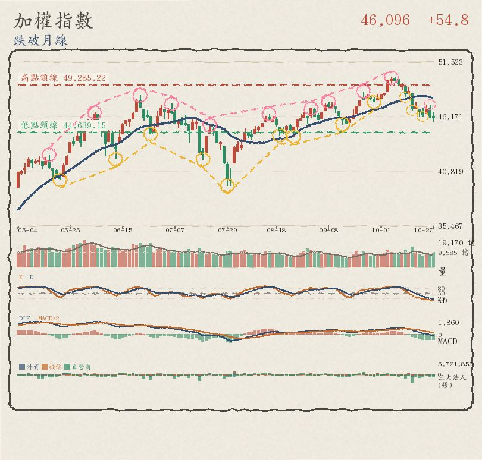
圖說：加權指數日 K（與個股圖相同標記）：黃圈＝轉折低點、粉圈＝轉折高點、虛線小圈＝還沒確認的轉折、藍線＝月線 MA20、水平虛線＝高點／低點頸線。最後一根是資料日當天。
本區塊為公開資料的技術面觀察，不構成投資建議，
不報牌、不預測、不下買賣決策。成交金額為集中市場總成交金額（含 ETF／權證），
與頁首摘要的「上市個股成交金額」口徑不同。標籤是統計，不是評分、也不是推薦。
上市 vs 上櫃（同期快篩）
加權 +0.12% vs 櫃買 -0.65%（方向相反，大小型股背離） → 方向相反（大小型股背離）
（兩個市場分開寫，不合併成一個數字；櫃買為 TPEX 公開資料）
櫃買歷史：TPEX 逐日回補 130 根；來源：櫃買中心 www/zh-tw/indexInfo/sectinx（逐日，官方；OpenAPI tpex_index 只回當月）
（TPEX OpenAPI 只回當月，故逐日回補；歷史不足就不算該條均線並標「資料不足」，不用錯數字）
近 20 個交易日大盤狀態回溯（最新在上）（點開看逐日主狀態／量比／量價象限）
用同一支程式回算最近 20 個交易日（主狀態 S1~S8 與量比 20 皆為當日收盤當時的判定，
不是事後調整）；量比 20 未公布的日子寫「—」。
好條件最多的（前 10）
不好條件最多的（前 10）
本期市場狀態：多頭（等權指數在 60 日均線之上）（多頭期間：趨勢類條件（站上月線／月線向上／突破頸線…）有效，回測後 20 日差距最大 +2.09%（t=12.2））
好條件（7 項）：站上月線、月線向上、底底高、頭頭高、突破頸線、外資買超、量價攻擊（收紅＋大量）。
不好條件（5 項）：在月線之下、月線下彎、相對大盤弱、今日下跌、外資賣超。
兩邊都是同一組資料（日線結構＋當日收盤量價籌碼）算出來的「符合項目數」，只是方向相反；
條件數不是評分、也不是推薦，不構成投資建議。
上升趨勢：底底高 ＋ 頭頭高（9 上市 7／上櫃 2）
量價攻擊（收紅＋大量）（16 上市 13／上櫃 3）
跌破前低（線型轉弱）（24 上市 17／上櫃 7）
逐檔分析（70 檔）
區間或轉弱 成交金額 913.13 億・全榜第 1 名（上市第 1 名）
好條件 1/7：量價攻擊（收紅＋大量）
不好條件 3/5：在月線之下、月線下彎、外資賣超
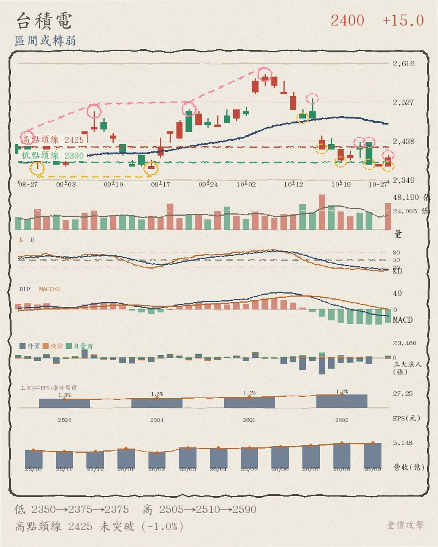
今天帶量收紅、跌破月線 2476.5，離高點頸線 2425 還差 1.0%，轉折還沒走出明顯方向。
- 月線位置：收盤 2400 在月線 2476.5 之下；5 日線 2399 也在月線之下（短均在下）；月線走平或向下、5 日線走平或向下
- 量能：成交量是 20 日均量的 1.53 倍，比 20 日均量大不少；收紅又量增，量價配合
- 關鍵價位：高點頸線 2425 還沒突破，差 1.0%；最近轉折高點 2590（低於 7.3%）；最近轉折低點 2375（高於 1.1%）
- 轉折結構：低點 2350、2375、2375 與高點 2505、2510、2590 都沒有明顯遞增，屬於區間震盪或轉弱；還沒確認的轉折低點 10-22 2385、10-27 2380；還沒確認的轉折高點 10-22 2435、10-27 2405（圖上虛線小圈）
底部墊高、未過前高 成交金額 575.64 億・全榜第 2 名（上市第 2 名）
好條件 1/7：底底高
不好條件 5/5：在月線之下、月線下彎、相對大盤弱、今日下跌、外資賣超
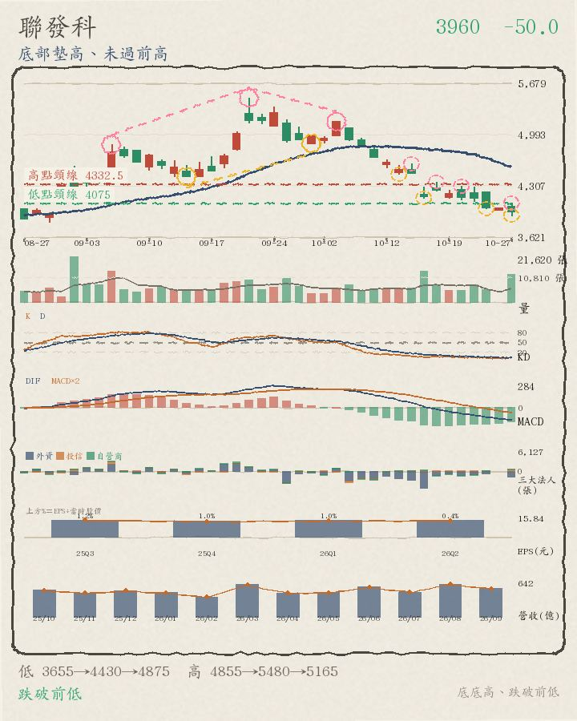
今天帶量收黑、跌破月線 4558.5，跌破前一個轉折低點（高點頸線 4332.5 還在收盤上方），底部還在墊高（但高點沒同步創高）。
- 月線位置：收盤 3960 在月線 4558.5 之下；5 日線 4054 也在月線之下（短均在下）；月線走平或向下、5 日線走平或向下
- 量能：成交量是 20 日均量的 1.86 倍，比 20 日均量大不少；收黑卻量增，量價背離
- 關鍵價位：高點頸線 4332.5 還沒突破、還在收盤上方 8.6%；最近轉折高點 5165（低於 23.3%）；最近轉折低點 4875（低於 18.8%）
- 轉折結構：低點 3655、4430、4875 墊高 33.4%（底底高），但高點 4855、5480、5165 沒有同步創高；還沒確認的轉折低點 10-22 4005、10-27 3910；還沒確認的轉折高點 10-20 4305、10-27 4075（圖上虛線小圈）
區間或轉弱 成交金額 346.49 億・全榜第 3 名（上市第 3 名）
好條件 2/7：站上月線、月線向上
不好條件 3/5：相對大盤弱、今日下跌、外資賣超
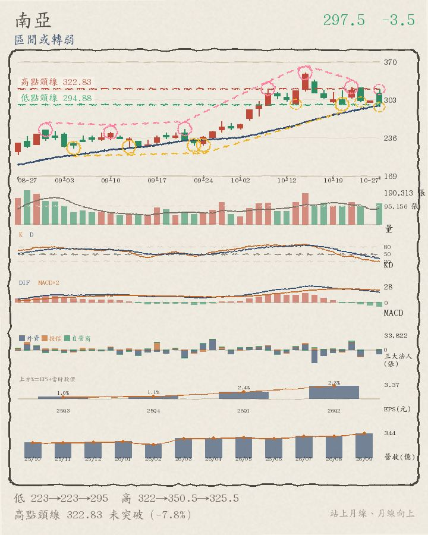
今天帶量收黑、站上月線 293.475，離高點頸線 322.83 還差 7.8%，轉折還沒走出明顯方向。
- 月線位置：收盤 297.5 在月線 293.475 之上；5 日線 303.2 也在月線之上（短均在上）；月線向上、5 日線走平或向下
- 量能：成交量是 20 日均量的 1.19 倍，比 20 日均量大不少；收黑卻量增，量價背離
- 關鍵價位：高點頸線 322.83 還沒突破，差 7.8%；最近轉折高點 325.5（低於 8.6%）；最近轉折低點 295（高於 0.8%）
- 轉折結構：低點 223、223、295 與高點 322、350.5、325.5 都沒有明顯遞增，屬於區間震盪或轉弱；還沒確認的轉折低點 10-22 299、10-27 290.5；還沒確認的轉折高點 10-27 321（圖上虛線小圈）
上升趨勢（底底高＋頭頭高） 成交金額 322.72 億・全榜第 4 名（上市第 4 名）
好條件 3/7：月線向上、底底高、頭頭高
不好條件 4/5：在月線之下、相對大盤弱、今日下跌、外資賣超
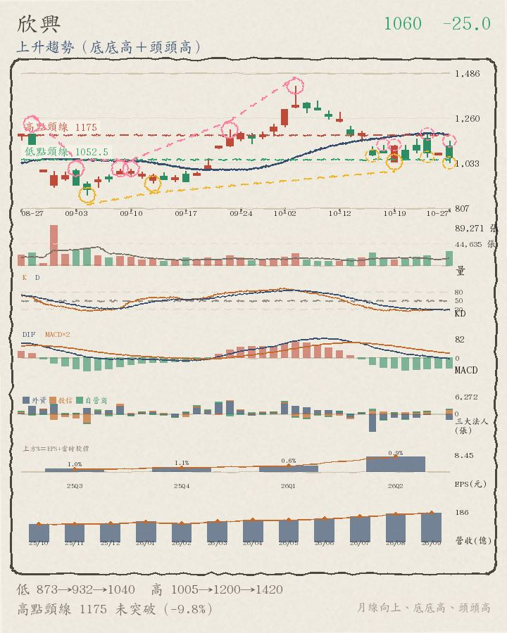
今天帶量收黑、跌破月線 1177.25，離高點頸線 1175 還差 9.8%，轉折結構仍是底底高＋頭頭高。
- 月線位置：收盤 1060 在月線 1177.25 之下；5 日線 1077 也在月線之下（短均在下）；月線向上、5 日線走平或向下
- 量能：成交量是 20 日均量的 1.93 倍，比 20 日均量大不少；收黑卻量增，量價背離
- 關鍵價位：高點頸線 1175 還沒突破，差 9.8%；最近轉折高點 1420（低於 25.4%）；最近轉折低點 1040（高於 1.9%）
- 轉折結構：低點 873、932、1040 一路墊高 19.1%、高點 1005、1200、1420 也一路墊高 41.3%，是底底高＋頭頭高；還沒確認的轉折低點 10-22 1065、10-27 1035；還沒確認的轉折高點 10-22 1180、10-27 1145（圖上虛線小圈）
剛突破前高 成交金額 295.92 億・全榜第 5 名（上市第 5 名）
好條件 2/7：月線向上、頭頭高
不好條件 4/5：在月線之下、相對大盤弱、今日下跌、外資賣超
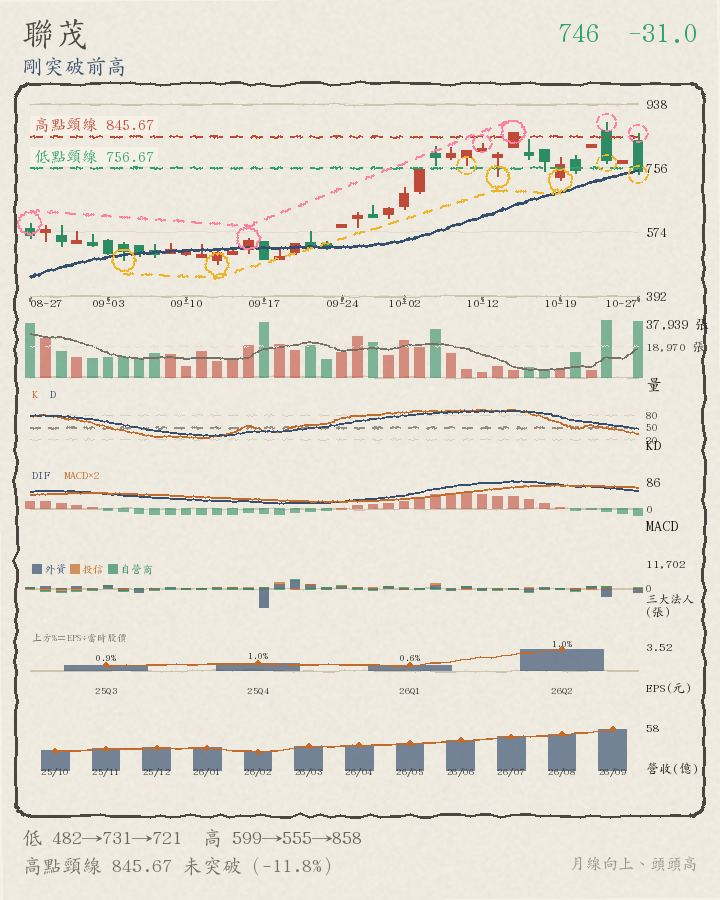
今天帶量收黑、跌破月線 748.9，離高點頸線 845.67 還差 11.8%，高點還在墊高（但底部沒同步墊高）。
- 月線位置：收盤 746 在月線 748.9 之下；5 日線 774.4 也在月線之上（短均在上）；月線向上、5 日線走平或向下
- 量能：成交量是 20 日均量的 2.55 倍，比 20 日均量大不少；收黑卻量增，量價背離
- 關鍵價位：高點頸線 845.67 還沒突破，差 11.8%；最近轉折高點 858（低於 13.1%）；最近轉折低點 721（高於 3.5%）
- 轉折結構：高點 599、555、858 墊高 3.1%（頭頭高），但低點 482、731、721 沒有同步墊高；還沒確認的轉折低點 10-22 770、10-27 737；還沒確認的轉折高點 10-22 885、10-27 854（圖上虛線小圈）
高點墊高、底部不穩 成交金額 293.97 億・全榜第 6 名（上市第 6 名）
好條件 1/7：頭頭高
不好條件 5/5：在月線之下、月線下彎、相對大盤弱、今日下跌、外資賣超
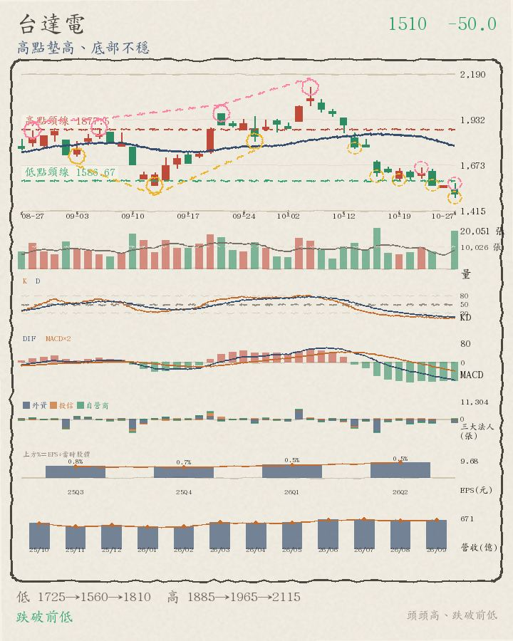
今天帶量收黑、跌破月線 1783，跌破前一個轉折低點（高點頸線 1877.5 還在收盤上方），高點還在墊高（但底部沒同步墊高）。
- 月線位置：收盤 1510 在月線 1783 之下；5 日線 1572 也在月線之下（短均在下）；月線走平或向下、5 日線走平或向下
- 量能：成交量是 20 日均量的 1.87 倍，比 20 日均量大不少；收黑卻量增，量價背離
- 關鍵價位：高點頸線 1877.5 還沒突破、還在收盤上方 19.6%；最近轉折高點 2115（低於 28.6%）；最近轉折低點 1810（低於 16.6%）
- 轉折結構：高點 1885、1965、2115 墊高 12.2%（頭頭高），但低點 1725、1560、1810 沒有同步墊高；還沒確認的轉折低點 10-22 1560、10-27 1490；還沒確認的轉折高點 10-21 1660、10-27 1570（圖上虛線小圈）
底部墊高、突破前高 成交金額 248.55 億・全榜第 7 名（上市第 7 名）
好條件 3/7：月線向上、底底高、頭頭高
不好條件 4/5：在月線之下、相對大盤弱、今日下跌、外資賣超
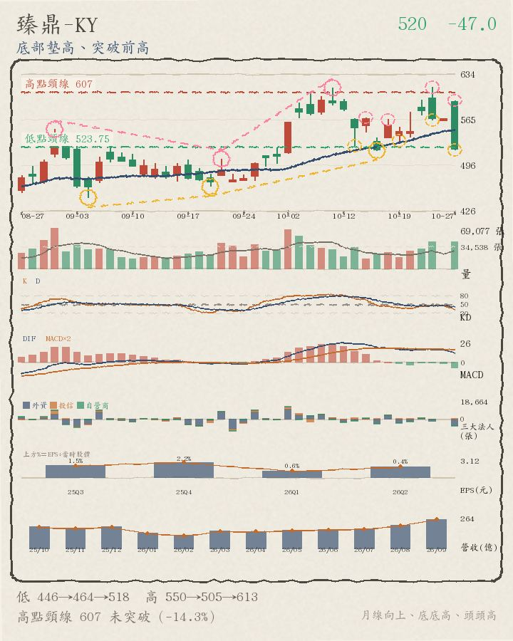
今天帶量收黑、跌破月線 549.55，離高點頸線 607 還差 14.3%，轉折結構仍是底底高＋頭頭高。
- 月線位置：收盤 520 在月線 549.55 之下；5 日線 555.8 也在月線之上（短均在上）；月線向上、5 日線向上
- 量能：成交量是 20 日均量的 1.35 倍，比 20 日均量大不少；收黑卻量增，量價背離
- 關鍵價位：高點頸線 607 還沒突破，差 14.3%；最近轉折高點 613（低於 15.2%）；最近轉折低點 518（高於 0.4%）
- 轉折結構：低點 446.5、463.5、518 一路墊高 16.0%、高點 550、505、613 也一路墊高 0.2%，是底底高＋頭頭高；還沒確認的轉折低點 10-22 564、10-27 519；還沒確認的轉折高點 10-22 614、10-27 594（圖上虛線小圈）
底部墊高、未過前高 成交金額 242.97 億・全榜第 8 名（上市第 8 名）
好條件 2/7：月線向上、底底高
不好條件 4/5：在月線之下、相對大盤弱、今日下跌、外資賣超
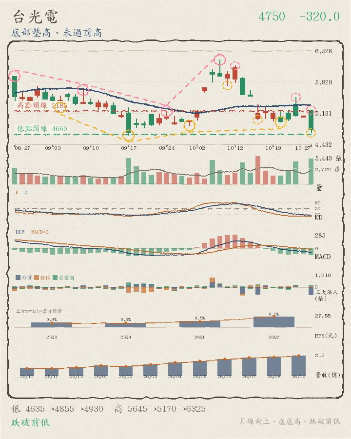
今天帶量收黑、跌破月線 5308，跌破前一個轉折低點（高點頸線 5185 還在收盤上方），底部還在墊高（但高點沒同步創高）。
- 月線位置：收盤 4750 在月線 5308 之下；5 日線 4965 也在月線之下（短均在下）；月線向上、5 日線走平或向下
- 量能：成交量是 20 日均量的 1.95 倍，比 20 日均量大不少；收黑卻量增，量價背離
- 關鍵價位：高點頸線 5185 還沒突破、還在收盤上方 8.4%；最近轉折高點 6325（低於 24.9%）；最近轉折低點 4930（低於 3.7%）
- 轉折結構：低點 4635、4855、4930 墊高 6.4%（底底高），但高點 5645、5170、6325 沒有同步創高；還沒確認的轉折低點 10-15 4980、10-27 4685；還沒確認的轉折高點 10-22 5485、10-27 5200（圖上虛線小圈）
區間或轉弱 成交金額 200.73 億・全榜第 10 名（上市第 9 名）
好條件 1/7：外資買超
不好條件 2/5：在月線之下、月線下彎
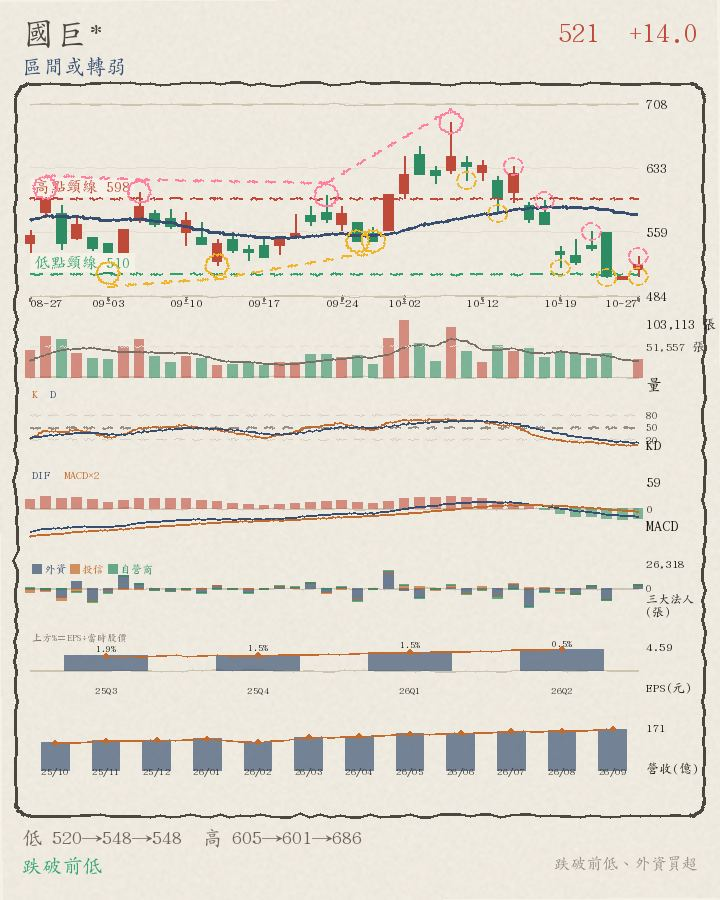
今天收紅、但成交量比平均少、跌破月線 578.65，跌破前一個轉折低點（高點頸線 598 還在收盤上方），轉折還沒走出明顯方向。
- 月線位置：收盤 521 在月線 578.65 之下；5 日線 520 也在月線之下（短均在下）；月線走平或向下、5 日線走平或向下
- 量能：成交量是 20 日均量的 0.66 倍，比 20 日均量少很多；收紅但量縮，量價背離
- 關鍵價位：高點頸線 598 還沒突破、還在收盤上方 12.9%；最近轉折高點 686（低於 24.1%）；最近轉折低點 548（低於 4.9%）
- 轉折結構：低點 520、548、548 與高點 605、601、686 都沒有明顯遞增，屬於區間震盪或轉弱；還沒確認的轉折低點 10-22 506、10-27 507；還沒確認的轉折高點 10-21 559、10-27 530（圖上虛線小圈）
區間或轉弱 成交金額 193.99 億・全榜第 11 名（上市第 10 名）
好條件 2/7：外資買超、量價攻擊（收紅＋大量）
不好條件 2/5：在月線之下、月線下彎
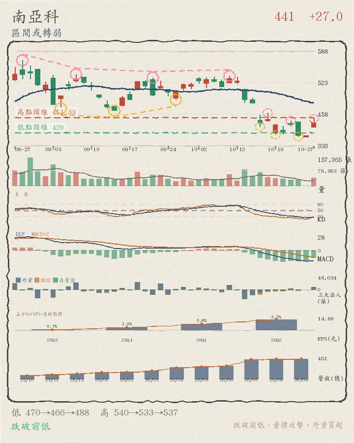
今天收紅、跌破月線 481，跌破前一個轉折低點（高點頸線 451.33 還在收盤上方），轉折還沒走出明顯方向。
- 月線位置：收盤 441 在月線 481 之下；5 日線 425.5 也在月線之下（短均在下）；月線走平或向下、5 日線走平或向下
- 量能：成交量是 20 日均量的 1.01 倍，跟 20 日均量差不多
- 關鍵價位：高點頸線 451.33 還沒突破、還在收盤上方 2.3%；最近轉折高點 537（低於 17.9%）；最近轉折低點 488（低於 9.6%）
- 轉折結構：低點 470、465.5、488 與高點 540、533、537 都沒有明顯遞增，屬於區間震盪或轉弱；還沒確認的轉折低點 10-19 415.5、10-22 412；還沒確認的轉折高點 10-21 444、10-27 449（圖上虛線小圈）
底部墊高、未過前高 成交金額 192.36 億・全榜第 12 名（上市第 11 名）
好條件 2/7：月線向上、底底高
不好條件 4/5：在月線之下、相對大盤弱、今日下跌、外資賣超
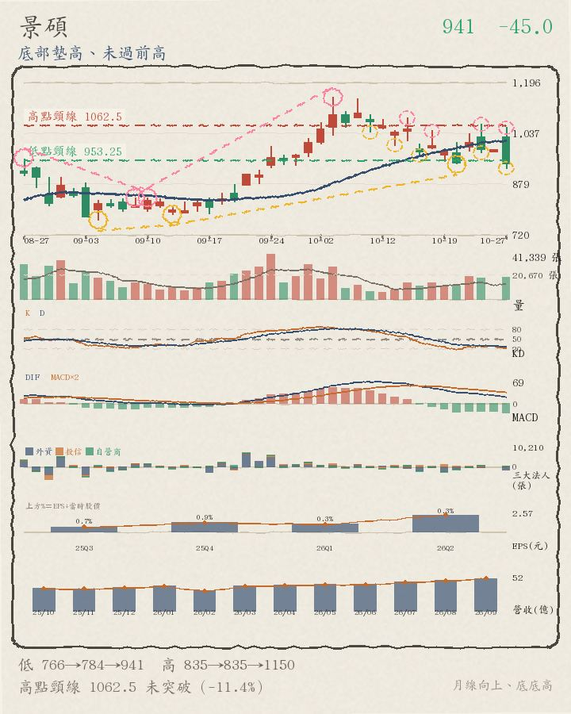
今天帶量收黑、跌破月線 1013.3，離高點頸線 1062.5 還差 11.4%，底部還在墊高（但高點沒同步創高）。
- 月線位置：收盤 941 在月線 1013.3 之下；5 日線 973.6 也在月線之下（短均在下）；月線向上、5 日線走平或向下
- 量能：成交量是 20 日均量的 1.11 倍，比 20 日均量大一些；收黑卻量增，量價背離
- 關鍵價位：高點頸線 1062.5 還沒突破，差 11.4%；最近轉折高點 1150（低於 18.2%）；最近轉折低點 941（高於 0.0%）
- 轉折結構：低點 766、784、941 墊高 22.8%（底底高），但高點 835、835、1150 沒有同步創高；還沒確認的轉折低點 10-22 976、10-27 928；還沒確認的轉折高點 10-22 1065、10-27 1055（圖上虛線小圈）
區間或轉弱 成交金額 176.98 億・全榜第 13 名（上市第 12 名）
好條件 2/7：月線向上、外資買超
不好條件 3/5：在月線之下、相對大盤弱、今日下跌
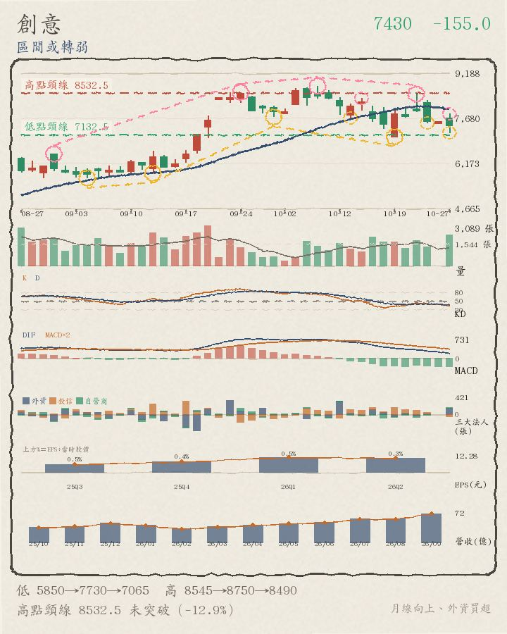
今天帶量收黑、跌破月線 7992.5，離高點頸線 8532.5 還差 12.9%，轉折還沒走出明顯方向。
- 月線位置：收盤 7430 在月線 7992.5 之下；5 日線 7669 也在月線之下（短均在下）；月線向上、5 日線走平或向下
- 量能：成交量是 20 日均量的 1.75 倍，比 20 日均量大不少；收黑卻量增，量價背離
- 關鍵價位：高點頸線 8532.5 還沒突破，差 12.9%；最近轉折高點 8490（低於 12.5%）；最近轉折低點 7065（高於 5.2%）
- 轉折結構：低點 5850、7730、7065 與高點 8545、8750、8490 都沒有明顯遞增，屬於區間震盪或轉弱；還沒確認的轉折低點 10-22 7530、10-27 7200；還沒確認的轉折高點 10-14 8345、10-27 7825（圖上虛線小圈）
高點墊高、底部不穩 成交金額 168.88 億・全榜第 14 名（上市第 13 名）
好條件 2/7：月線向上、頭頭高
不好條件 4/5：在月線之下、相對大盤弱、今日下跌、外資賣超
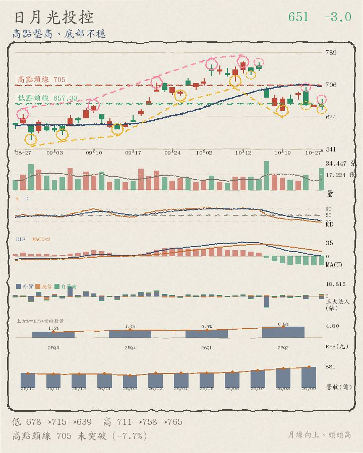
今天帶量收黑、跌破月線 702，離高點頸線 705 還差 7.7%，高點還在墊高（但底部沒同步墊高）。
- 月線位置：收盤 651 在月線 702 之下；5 日線 660.6 也在月線之下（短均在下）；月線向上、5 日線走平或向下
- 量能：成交量是 20 日均量的 1.80 倍，比 20 日均量大不少；收黑卻量增，量價背離
- 關鍵價位：高點頸線 705 還沒突破，差 7.7%；最近轉折高點 765（低於 14.9%）；最近轉折低點 639（高於 1.9%）
- 轉折結構：高點 711、758、765 墊高 7.6%（頭頭高），但低點 678、715、639 沒有同步墊高；還沒確認的轉折低點 10-22 652、10-27 642；還沒確認的轉折高點 10-22 699、10-27 668（圖上虛線小圈）
區間或轉弱 成交金額 168.75 億・全榜第 15 名（上市第 14 名）
好條件 0/7：無
不好條件 5/5：在月線之下、月線下彎、相對大盤弱、今日下跌、外資賣超
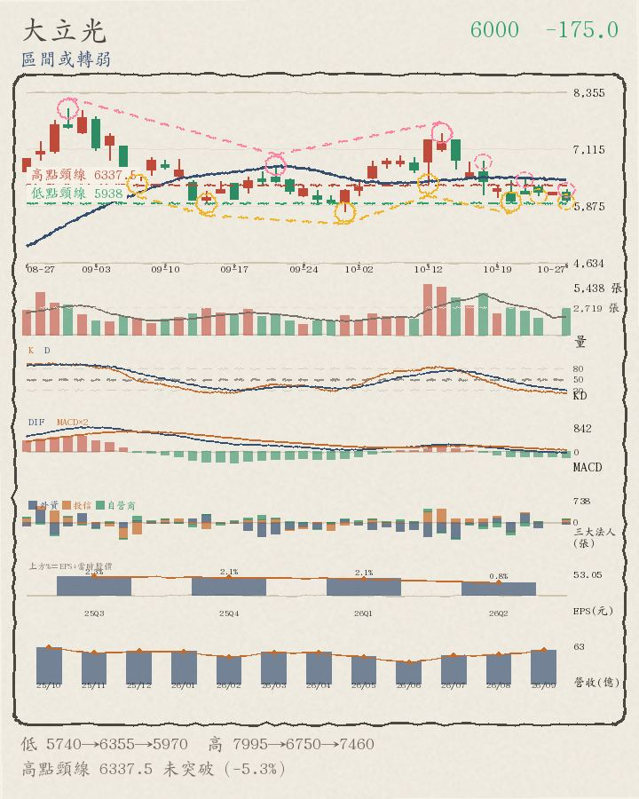
今天帶量收黑、跌破月線 6451，離高點頸線 6337.5 還差 5.3%，轉折還沒走出明顯方向。
- 月線位置：收盤 6000 在月線 6451 之下；5 日線 6099 也在月線之下（短均在下）；月線走平或向下、5 日線走平或向下
- 量能：成交量是 20 日均量的 1.09 倍，比 20 日均量大一些；收黑卻量增，量價背離
- 關鍵價位：高點頸線 6337.5 還沒突破，差 5.3%；最近轉折高點 7460（低於 19.6%）；最近轉折低點 5970（高於 0.5%）
- 轉折結構：低點 5740、6355、5970 與高點 7995、6750、7460 都沒有明顯遞增，屬於區間震盪或轉弱；還沒確認的轉折低點 10-22 6090、10-27 5960；還沒確認的轉折高點 10-21 6450、10-27 6225（圖上虛線小圈）
底部墊高、未過前高 成交金額 158.63 億・全榜第 16 名（上市第 15 名）
好條件 2/7：底底高、外資買超
不好條件 4/5：在月線之下、月線下彎、相對大盤弱、今日下跌
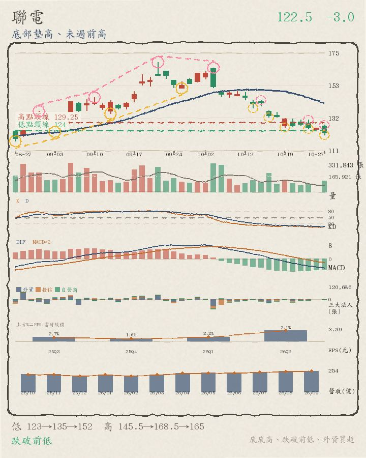
今天收黑、成交量也比平均少、跌破月線 141.825，跌破前一個轉折低點（高點頸線 129.25 還在收盤上方），底部還在墊高（但高點沒同步創高）。
- 月線位置：收盤 122.5 在月線 141.825 之下；5 日線 125.7 也在月線之下（短均在下）；月線走平或向下、5 日線走平或向下
- 量能：成交量是 20 日均量的 0.93 倍，比 20 日均量少一些
- 關鍵價位：高點頸線 129.25 還沒突破、還在收盤上方 5.2%；最近轉折高點 165（低於 25.8%）；最近轉折低點 151.5（低於 19.1%）
- 轉折結構：低點 123、135、151.5 墊高 23.2%（底底高），但高點 145.5、168.5、165 沒有同步創高；還沒確認的轉折低點 10-22 125、10-27 121；還沒確認的轉折高點 10-22 131、10-27 127.5（圖上虛線小圈）
區間或轉弱 成交金額 141.52 億・全榜第 18 名（上市第 16 名）
好條件 2/7：月線向上、外資買超
不好條件 3/5：在月線之下、相對大盤弱、今日下跌
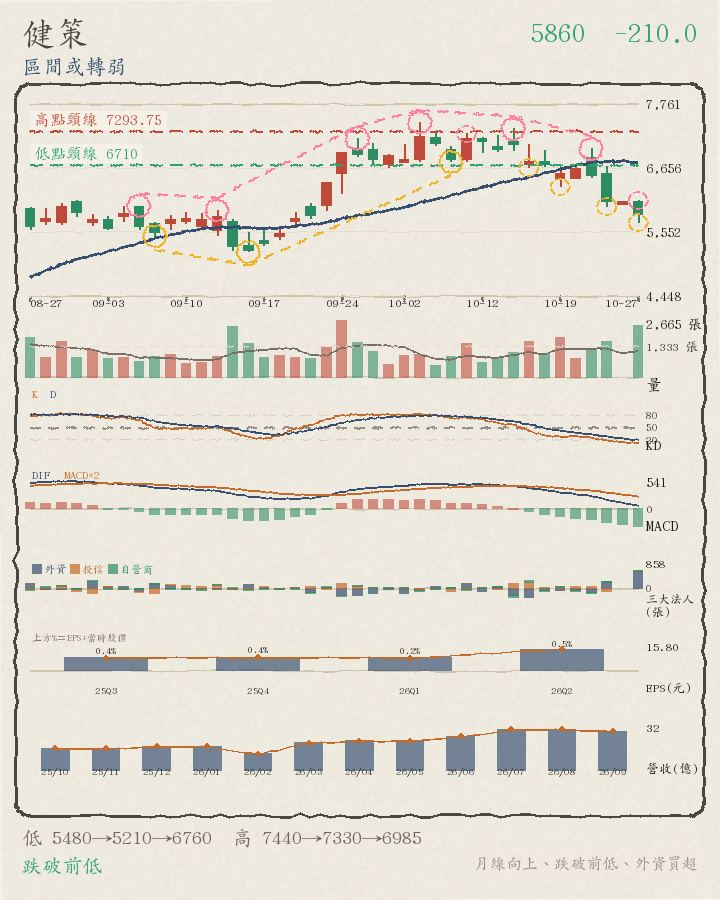
今天帶量收黑、跌破月線 6750.25，跌破前一個轉折低點（高點頸線 7293.75 還在收盤上方），轉折還沒走出明顯方向。
- 月線位置：收盤 5860 在月線 6750.25 之下；5 日線 6237 也在月線之下（短均在下）；月線向上、5 日線走平或向下
- 量能：成交量是 20 日均量的 1.94 倍，比 20 日均量大不少；收黑卻量增，量價背離
- 關鍵價位：高點頸線 7293.75 還沒突破、還在收盤上方 19.7%；最近轉折高點 6985（低於 16.1%）；最近轉折低點 6760（低於 13.3%）
- 轉折結構：低點 5480、5210、6760 與高點 7440、7330、6985 都沒有明顯遞增，屬於區間震盪或轉弱；還沒確認的轉折低點 10-22 5995、10-27 5710；還沒確認的轉折高點 10-08 7245、10-27 6095（圖上虛線小圈）
底部墊高、未過前高 成交金額 135.54 億・全榜第 19 名（上市第 17 名）
好條件 2/7：月線向上、底底高
不好條件 4/5：在月線之下、相對大盤弱、今日下跌、外資賣超
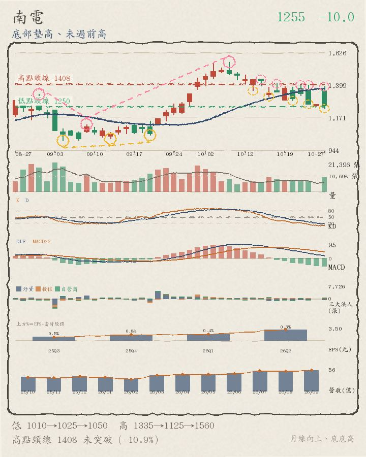
今天收黑、跌破月線 1375.25，離高點頸線 1408 還差 10.9%，底部還在墊高（但高點沒同步創高）。
- 月線位置：收盤 1255 在月線 1375.25 之下；5 日線 1286 也在月線之下（短均在下）；月線向上、5 日線走平或向下
- 量能：成交量是 20 日均量的 1.01 倍，跟 20 日均量差不多
- 關鍵價位：高點頸線 1408 還沒突破，差 10.9%；最近轉折高點 1560（低於 19.6%）；最近轉折低點 1050（高於 19.5%）
- 轉折結構：低點 1010、1025、1050 墊高 4.0%（底底高），但高點 1335、1125、1560 沒有同步創高；還沒確認的轉折低點 10-22 1265、10-27 1235；還沒確認的轉折高點 10-22 1400、10-27 1390（圖上虛線小圈）
區間或轉弱 成交金額 132.36 億・全榜第 20 名（上市第 18 名）
好條件 3/7：站上月線、外資買超、量價攻擊（收紅＋大量）
不好條件 1/5：月線下彎
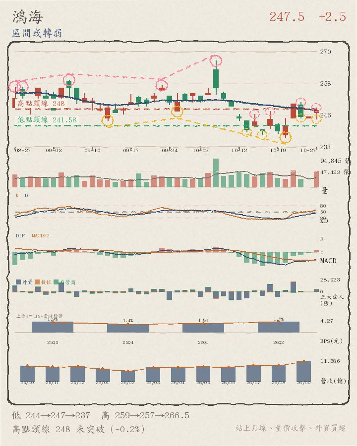
今天帶量收紅、站上月線 247.4，離高點頸線 248 還差 0.2%，轉折還沒走出明顯方向。
- 月線位置：收盤 247.5 在月線 247.4 之上；5 日線 245.8 也在月線之下（短均在下）；月線走平或向下、5 日線向上
- 量能：成交量是 20 日均量的 1.33 倍，比 20 日均量大不少；收紅又量增，量價配合
- 關鍵價位：高點頸線 248 還沒突破，差 0.2%；最近轉折高點 266.5（低於 7.1%）；最近轉折低點 237（高於 4.4%）
- 轉折結構：低點 243.5、247、237 與高點 259、257、266.5 都沒有明顯遞增，屬於區間震盪或轉弱；還沒確認的轉折低點 10-22 244.5、10-27 244；還沒確認的轉折高點 10-22 250.5、10-27 248.5（圖上虛線小圈）
上升趨勢（底底高＋頭頭高） 成交金額 117.33 億・全榜第 21 名（上市第 19 名）
好條件 3/7：月線向上、底底高、頭頭高
不好條件 4/5：在月線之下、相對大盤弱、今日下跌、外資賣超
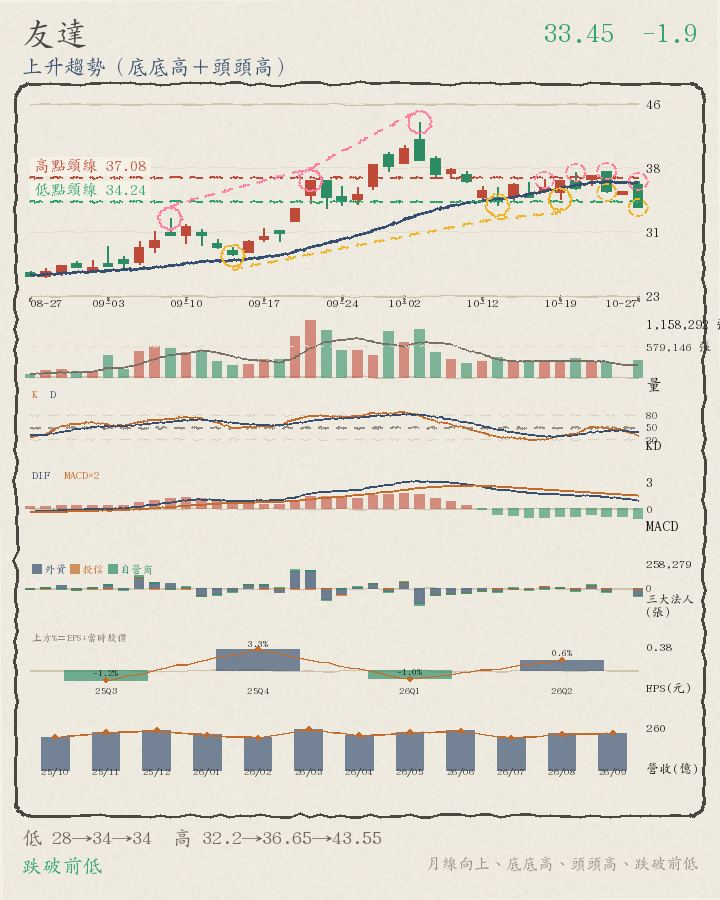
今天收黑、成交量也比平均少、跌破月線 36.415，跌破前一個轉折低點（高點頸線 37.08 還在收盤上方），轉折結構仍是底底高＋頭頭高。
- 月線位置：收盤 33.45 在月線 36.415 之下；5 日線 35.45 也在月線之下（短均在下）；月線向上、5 日線走平或向下
- 量能：成交量是 20 日均量的 0.70 倍，比 20 日均量少很多
- 關鍵價位：高點頸線 37.08 還沒突破、還在收盤上方 9.8%；最近轉折高點 43.55（低於 23.2%）；最近轉折低點 34.45（低於 2.9%）
- 轉折結構：低點 27.75、33.75、34.45 一路墊高 24.1%、高點 32.2、36.65、43.55 也一路墊高 35.2%，是底底高＋頭頭高；還沒確認的轉折低點 10-22 35.3、10-27 33.45；還沒確認的轉折高點 10-22 37.8、10-27 36.55（圖上虛線小圈）
區間或轉弱 成交金額 111.62 億・全榜第 22 名（上市第 20 名）
好條件 2/7：外資買超、量價攻擊（收紅＋大量）
不好條件 2/5：在月線之下、月線下彎
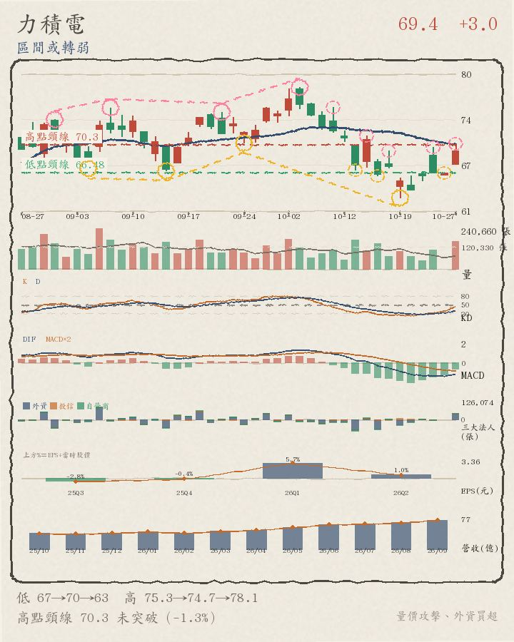
今天帶量收紅、跌破月線 70.335，離高點頸線 70.3 還差 1.3%，轉折還沒走出明顯方向。
- 月線位置：收盤 69.4 在月線 70.335 之下；5 日線 66.5 也在月線之下（短均在下）；月線走平或向下、5 日線走平或向下
- 量能：成交量是 20 日均量的 1.55 倍，比 20 日均量大不少；收紅又量增，量價配合
- 關鍵價位：高點頸線 70.3 還沒突破，差 1.3%；最近轉折高點 78.1（低於 11.1%）；最近轉折低點 63（高於 10.2%）
- 轉折結構：低點 66.7、70.5、63 與高點 75.3、74.7、78.1 都沒有明顯遞增，屬於區間震盪或轉弱；還沒確認的轉折低點 10-15 66、10-23 66.4；還沒確認的轉折高點 10-22 69.9、10-27 70.4（圖上虛線小圈）
區間或轉弱 成交金額 108.55 億・全榜第 23 名（上市第 21 名）
好條件 2/7：外資買超、量價攻擊（收紅＋大量）
不好條件 2/5：在月線之下、月線下彎
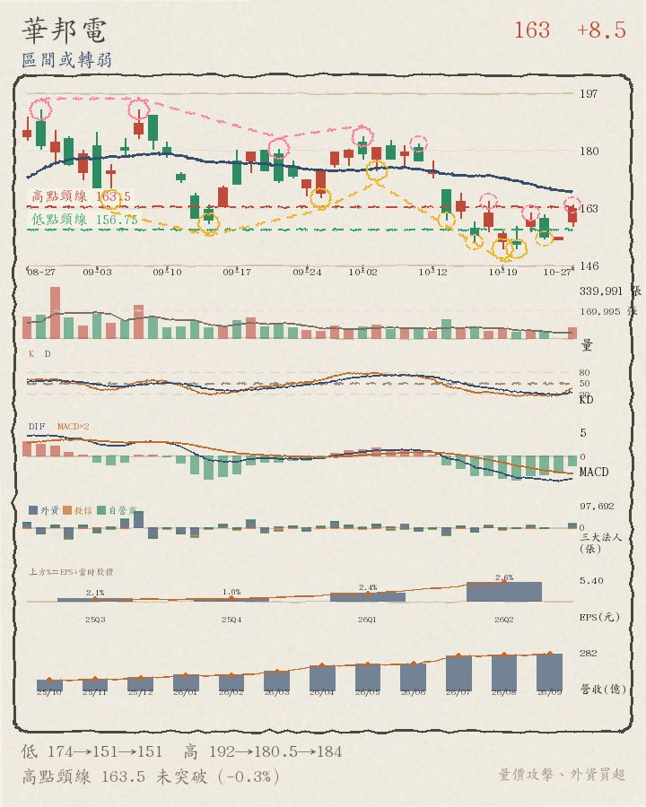
今天帶量收紅、跌破月線 167.775，離高點頸線 163.5 還差 0.3%，轉折還沒走出明顯方向。
- 月線位置：收盤 163 在月線 167.775 之下；5 日線 156.8 也在月線之下（短均在下）；月線走平或向下、5 日線走平或向下
- 量能：成交量是 20 日均量的 1.06 倍，比 20 日均量大一些；收紅又量增，量價配合
- 關鍵價位：高點頸線 163.5 還沒突破，差 0.3%；最近轉折高點 184（低於 11.4%）；最近轉折低點 151（高於 7.9%）
- 轉折結構：低點 174、151、151 與高點 192、180.5、184 都沒有明顯遞增，屬於區間震盪或轉弱；還沒確認的轉折低點 10-15 153、10-22 154；還沒確認的轉折高點 10-21 161.5、10-27 164（圖上虛線小圈）
剛突破前高 成交金額 108.51 億・全榜第 24 名（上市第 22 名）
好條件 4/7：站上月線、月線向上、頭頭高、量價攻擊（收紅＋大量）
不好條件 1/5：外資賣超
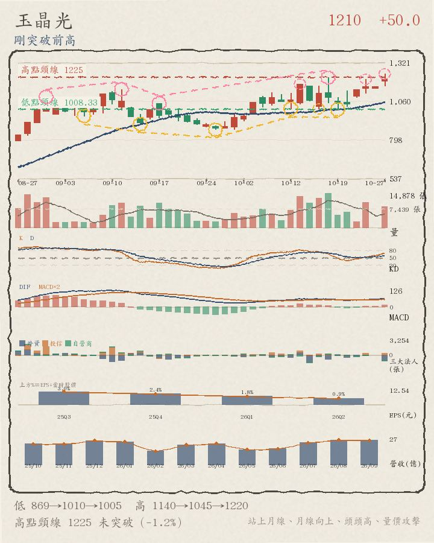
今天帶量收紅、站上月線 1054.7，離高點頸線 1225 還差 1.2%，高點還在墊高（但底部沒同步墊高）。
- 月線位置：收盤 1210 在月線 1054.7 之上；5 日線 1142 也在月線之上（短均在上）；月線向上、5 日線向上
- 量能：成交量是 20 日均量的 1.33 倍，比 20 日均量大不少；收紅又量增，量價配合
- 關鍵價位：高點頸線 1225 還沒突破，差 1.2%；最近轉折高點 1220（低於 0.8%）；最近轉折低點 1005（高於 20.4%）
- 轉折結構：高點 1140、1045、1220 墊高 2.0%（頭頭高），但低點 869、1010、1005 沒有同步墊高；還沒確認的轉折低點 10-15 1010；還沒確認的轉折高點 10-22 1210、10-27 1245（圖上虛線小圈）
區間或轉弱 成交金額 101.43 億・全榜第 25 名（上市第 23 名）
好條件 1/7：月線向上
不好條件 4/5：在月線之下、相對大盤弱、今日下跌、外資賣超
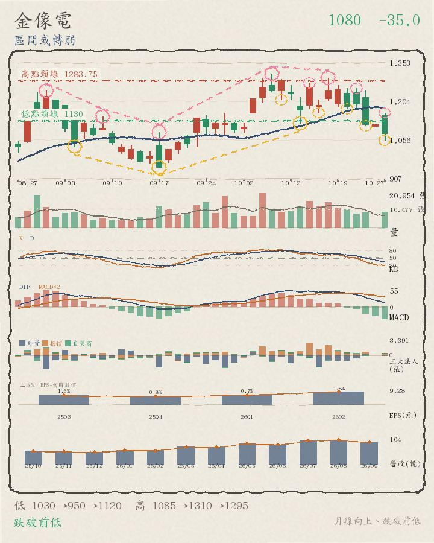
今天收黑、成交量也比平均少、跌破月線 1179.5，跌破前一個轉折低點（高點頸線 1283.75 還在收盤上方），轉折還沒走出明顯方向。
- 月線位置：收盤 1080 在月線 1179.5 之下；5 日線 1138 也在月線之下（短均在下）；月線向上、5 日線走平或向下
- 量能：成交量是 20 日均量的 0.78 倍，比 20 日均量少很多
- 關鍵價位：高點頸線 1283.75 還沒突破、還在收盤上方 15.9%；最近轉折高點 1295（低於 16.6%）；最近轉折低點 1120（低於 3.6%）
- 轉折結構：低點 1030、950、1120 與高點 1085、1310、1295 都沒有明顯遞增，屬於區間震盪或轉弱；還沒確認的轉折低點 10-22 1110、10-27 1055；還沒確認的轉折高點 10-21 1255、10-27 1160（圖上虛線小圈）
區間或轉弱 成交金額 100.68 億・全榜第 26 名（上市第 24 名）
好條件 1/7：月線向上
不好條件 2/5：在月線之下、外資賣超
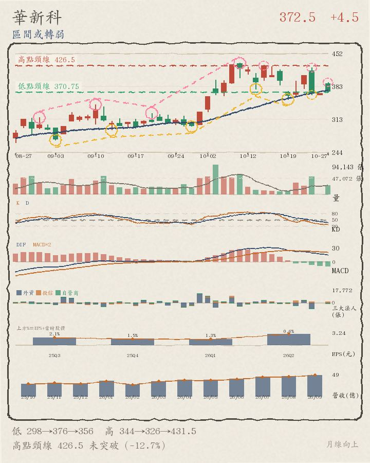
今天收紅、但成交量比平均少、跌破月線 374.65，離高點頸線 426.5 還差 12.7%，轉折還沒走出明顯方向。
- 月線位置：收盤 372.5 在月線 374.65 之下；5 日線 376.6 也在月線之上（短均在上）；月線向上、5 日線走平或向下
- 量能：成交量是 20 日均量的 0.79 倍，比 20 日均量少很多；收紅但量縮，量價背離
- 關鍵價位：高點頸線 426.5 還沒突破，差 12.7%；最近轉折高點 431.5（低於 13.7%）；最近轉折低點 355.5（高於 4.8%）
- 轉折結構：低點 298.5、376.5、355.5 與高點 344、326、431.5 都沒有明顯遞增，屬於區間震盪或轉弱；還沒確認的轉折低點 10-22 365；還沒確認的轉折高點 10-22 422、10-27 391（圖上虛線小圈）
貿聯-KY 3665 上市
1735 -140.0
區間或轉弱 成交金額 99.96 億・全榜第 27 名（上市第 25 名）
好條件 1/7：外資買超
不好條件 4/5：在月線之下、月線下彎、相對大盤弱、今日下跌
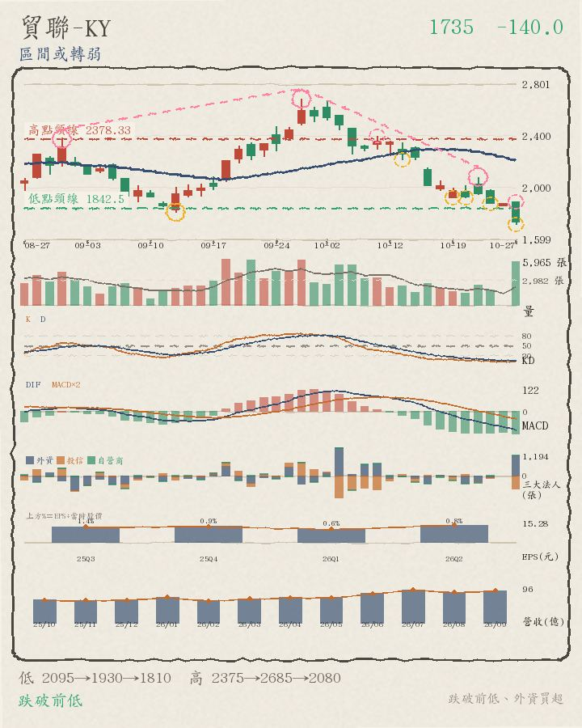
今天帶量收黑、跌破月線 2208.75，跌破前一個轉折低點（高點頸線 2378.33 還在收盤上方），轉折還沒走出明顯方向。
- 月線位置：收盤 1735 在月線 2208.75 之下；5 日線 1872 也在月線之下（短均在下）；月線走平或向下、5 日線走平或向下
- 量能：成交量是 20 日均量的 1.80 倍，比 20 日均量大不少；收黑卻量增，量價背離
- 關鍵價位：高點頸線 2378.33 還沒突破、還在收盤上方 27.0%；最近轉折高點 2080（低於 16.6%）；最近轉折低點 1810（低於 4.1%）
- 轉折結構：低點 2095、1930、1810 與高點 2375、2685、2080 都沒有明顯遞增，屬於區間震盪或轉弱；還沒確認的轉折低點 10-22 1875、10-27 1715；還沒確認的轉折高點 10-08 2400、10-27 1890（圖上虛線小圈）
區間或轉弱 成交金額 97.79 億・全榜第 29 名（上市第 26 名）
好條件 2/7：外資買超、量價攻擊（收紅＋大量）
不好條件 2/5：在月線之下、月線下彎
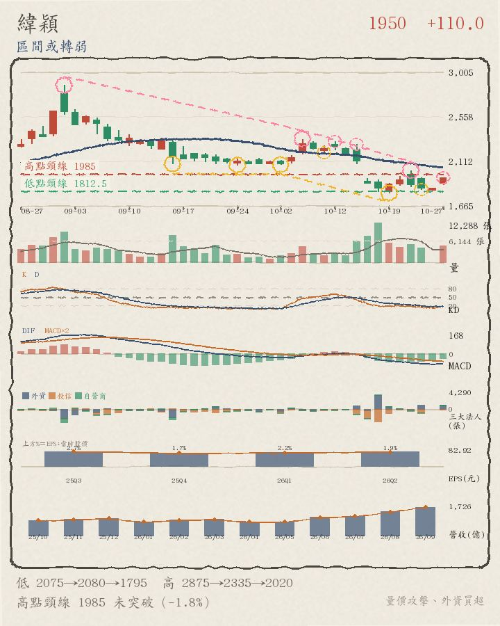
今天帶量收紅、跌破月線 2053.75，離高點頸線 1985 還差 1.8%，轉折還沒走出明顯方向。
- 月線位置：收盤 1950 在月線 2053.75 之下；5 日線 1887 也在月線之下（短均在下）；月線走平或向下、5 日線走平或向下
- 量能：成交量是 20 日均量的 1.29 倍，比 20 日均量大不少；收紅又量增，量價配合
- 關鍵價位：高點頸線 1985 還沒突破，差 1.8%；最近轉折高點 2020（低於 3.5%）；最近轉折低點 1795（高於 8.6%）
- 轉折結構：低點 2075、2080、1795 與高點 2875、2335、2020 都沒有明顯遞增，屬於區間震盪或轉弱；還沒確認的轉折低點 10-08 2200、10-22 1830；還沒確認的轉折高點 10-14 2285、10-27 1950（圖上虛線小圈）
區間或轉弱 成交金額 88.98 億・全榜第 31 名（上市第 27 名）
好條件 0/7：無
不好條件 5/5：在月線之下、月線下彎、相對大盤弱、今日下跌、外資賣超
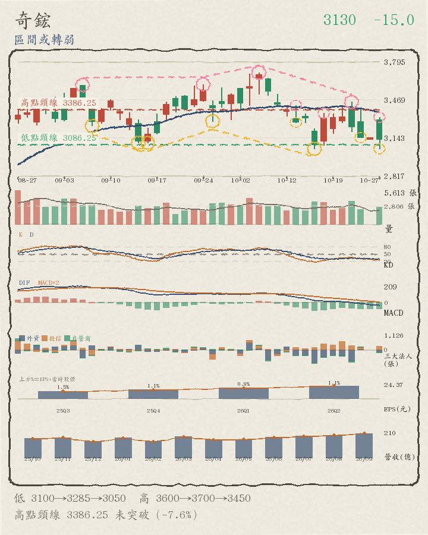
今天收黑、成交量也比平均少、跌破月線 3363.75，離高點頸線 3386.25 還差 7.6%，轉折還沒走出明顯方向。
- 月線位置：收盤 3130 在月線 3363.75 之下；5 日線 3196 也在月線之下（短均在下）；月線走平或向下、5 日線走平或向下
- 量能：成交量是 20 日均量的 0.94 倍，比 20 日均量少一些
- 關鍵價位：高點頸線 3386.25 還沒突破，差 7.6%；最近轉折高點 3450（低於 9.3%）；最近轉折低點 3050（高於 2.6%）
- 轉折結構：低點 3100、3285、3050 與高點 3600、3700、3450 都沒有明顯遞增，屬於區間震盪或轉弱；還沒確認的轉折低點 10-22 3145、10-27 3050；還沒確認的轉折高點 10-16 3355、10-27 3320（圖上虛線小圈）
區間或轉弱 成交金額 86.36 億・全榜第 32 名（上市第 28 名）
好條件 0/7：無
不好條件 5/5：在月線之下、月線下彎、相對大盤弱、今日下跌、外資賣超
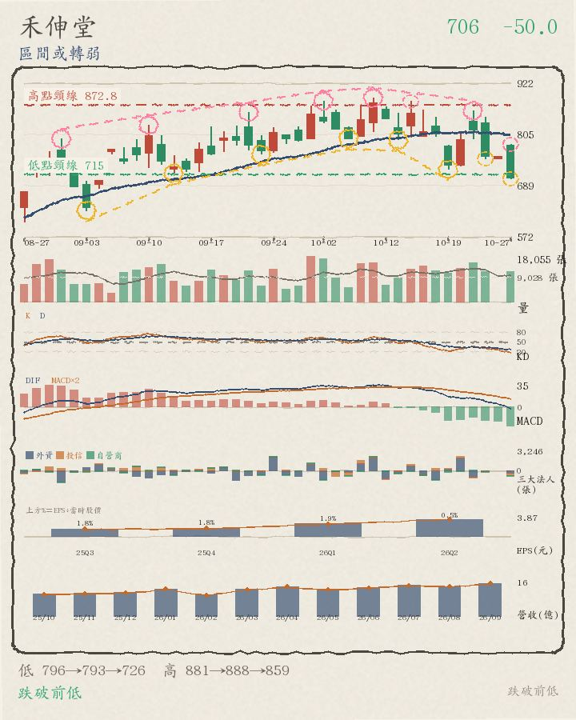
今天收黑、跌破月線 804.6，跌破前一個轉折低點（高點頸線 872.8 還在收盤上方），轉折還沒走出明顯方向。
- 月線位置：收盤 706 在月線 804.6 之下；5 日線 765.4 也在月線之下（短均在下）；月線走平或向下、5 日線走平或向下
- 量能：成交量是 20 日均量的 1.04 倍，跟 20 日均量差不多
- 關鍵價位：高點頸線 872.8 還沒突破、還在收盤上方 19.1%；最近轉折高點 859（低於 17.8%）；最近轉折低點 726（低於 2.8%）
- 轉折結構：低點 796、793、726 與高點 881、888、859 都沒有明顯遞增，屬於區間震盪或轉弱；還沒確認的轉折低點 10-22 750、10-27 704；還沒確認的轉折高點 10-14 880、10-27 783（圖上虛線小圈）
剛突破前高 成交金額 81.33 億・全榜第 33 名（上市第 29 名）
好條件 3/7：站上月線、月線向上、頭頭高
不好條件 3/5：相對大盤弱、今日下跌、外資賣超
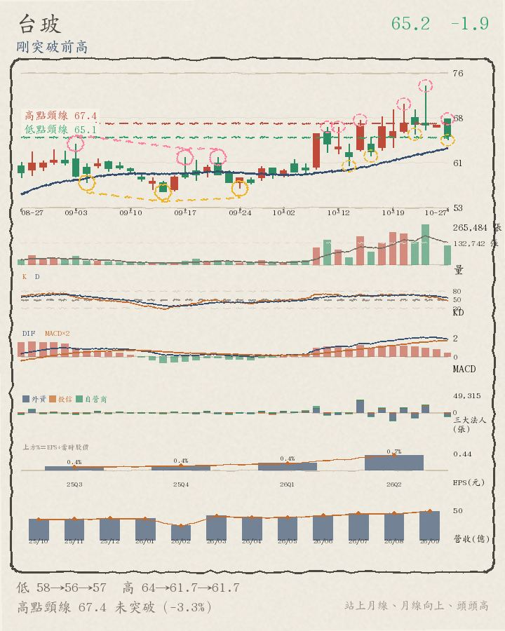
今天帶量收黑、站上月線 63.24，離高點頸線 67.4 還差 3.3%，高點還在墊高（但底部沒同步墊高）。
- 月線位置：收盤 65.2 在月線 63.24 之上；5 日線 66.8 也在月線之上（短均在上）；月線向上、5 日線向上
- 量能：成交量是 20 日均量的 1.31 倍，比 20 日均量大不少；收黑卻量增，量價背離
- 關鍵價位：高點頸線 67.4 還沒突破，差 3.3%；最近轉折高點 61.7（高於 5.7%）；最近轉折低點 56.6（高於 15.2%）
- 轉折結構：高點 64、61.7、61.7 墊高 19.3%（頭頭高），但低點 57.5、56、56.6 沒有同步墊高；還沒確認的轉折低點 10-21 65.6、10-27 64.6；還沒確認的轉折高點 10-22 73.6、10-27 68.1（圖上虛線小圈）
區間或轉弱 成交金額 77.56 億・全榜第 34 名（上市第 30 名）
好條件 1/7：外資買超
不好條件 4/5：在月線之下、月線下彎、相對大盤弱、今日下跌
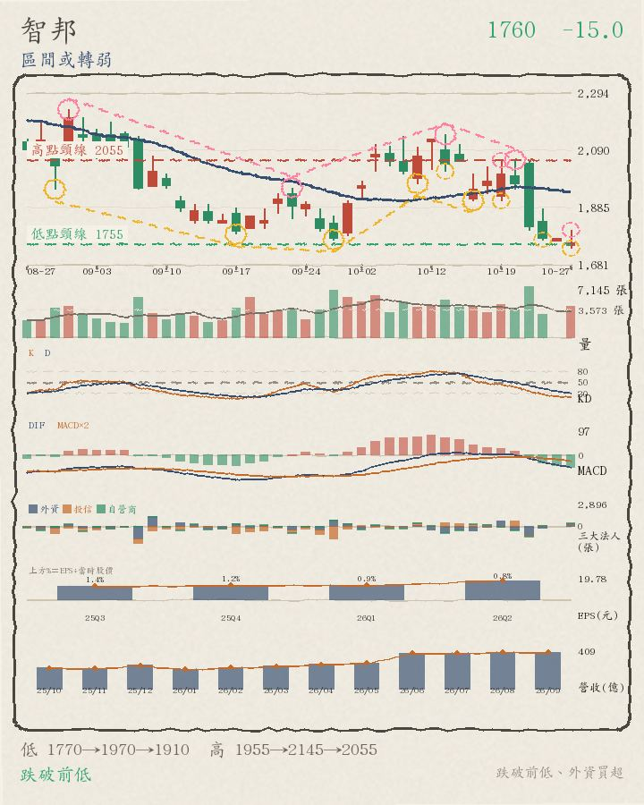
今天收黑、跌破月線 1940.25，跌破前一個轉折低點（高點頸線 2055 還在收盤上方），轉折還沒走出明顯方向。
- 月線位置：收盤 1760 在月線 1940.25 之下；5 日線 1819 也在月線之下（短均在下）；月線走平或向下、5 日線走平或向下
- 量能：成交量是 20 日均量的 0.97 倍，跟 20 日均量差不多
- 關鍵價位：高點頸線 2055 還沒突破、還在收盤上方 14.4%；最近轉折高點 2055（低於 14.4%）；最近轉折低點 1910（低於 7.9%）
- 轉折結構：低點 1770、1970、1910 與高點 1955、2145、2055 都沒有明顯遞增，屬於區間震盪或轉弱；還沒確認的轉折低點 10-22 1770、10-27 1740；還沒確認的轉折高點 10-19 2055、10-27 1805（圖上虛線小圈）
高點墊高、底部不穩 成交金額 75.97 億・全榜第 35 名（上市第 31 名）
好條件 3/7：月線向上、頭頭高、外資買超
不好條件 3/5：在月線之下、相對大盤弱、今日下跌
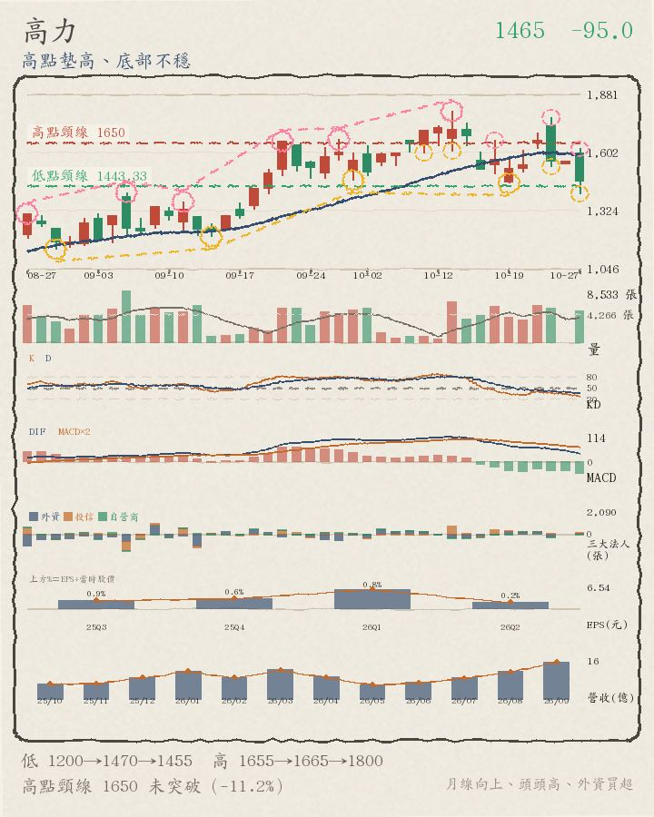
今天帶量收黑、跌破月線 1593.5，離高點頸線 1650 還差 11.2%，高點還在墊高（但底部沒同步墊高）。
- 月線位置：收盤 1465 在月線 1593.5 之下；5 日線 1558 也在月線之下（短均在下）；月線向上、5 日線走平或向下
- 量能：成交量是 20 日均量的 1.31 倍，比 20 日均量大不少；收黑卻量增，量價背離
- 關鍵價位：高點頸線 1650 還沒突破，差 11.2%；最近轉折高點 1800（低於 18.6%）；最近轉折低點 1455（高於 0.7%）
- 轉折結構：高點 1655、1665、1800 墊高 8.8%（頭頭高），但低點 1200、1470、1455 沒有同步墊高；還沒確認的轉折低點 10-22 1535、10-27 1405；還沒確認的轉折高點 10-22 1770、10-27 1620（圖上虛線小圈）
高點墊高、底部不穩 成交金額 71.85 億・全榜第 37 名（上市第 32 名）
好條件 1/7：頭頭高
不好條件 5/5：在月線之下、月線下彎、相對大盤弱、今日下跌、外資賣超
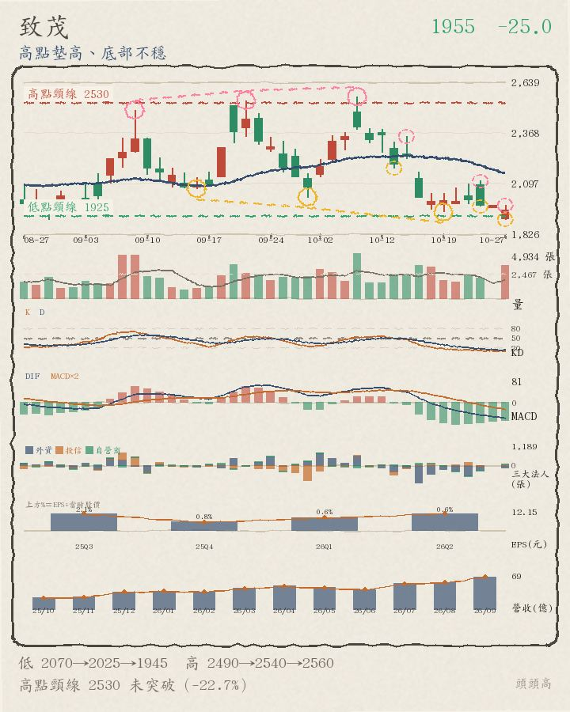
今天帶量收黑、跌破月線 2153，離高點頸線 2530 還差 22.7%，高點還在墊高（但底部沒同步墊高）。
- 月線位置：收盤 1955 在月線 2153 之下；5 日線 1985 也在月線之下（短均在下）；月線走平或向下、5 日線走平或向下
- 量能：成交量是 20 日均量的 1.43 倍，比 20 日均量大不少；收黑卻量增，量價背離
- 關鍵價位：高點頸線 2530 還沒突破，差 22.7%；最近轉折高點 2560（低於 23.6%）；最近轉折低點 1945（高於 0.5%）
- 轉折結構：高點 2490、2540、2560 墊高 2.8%（頭頭高），但低點 2070、2025、1945 沒有同步墊高；還沒確認的轉折低點 10-22 1975、10-27 1905；還沒確認的轉折高點 10-22 2110、10-27 1980（圖上虛線小圈）
區間或轉弱 成交金額 70.34 億・全榜第 38 名（上市第 33 名）
好條件 1/7：外資買超
不好條件 2/5：在月線之下、月線下彎
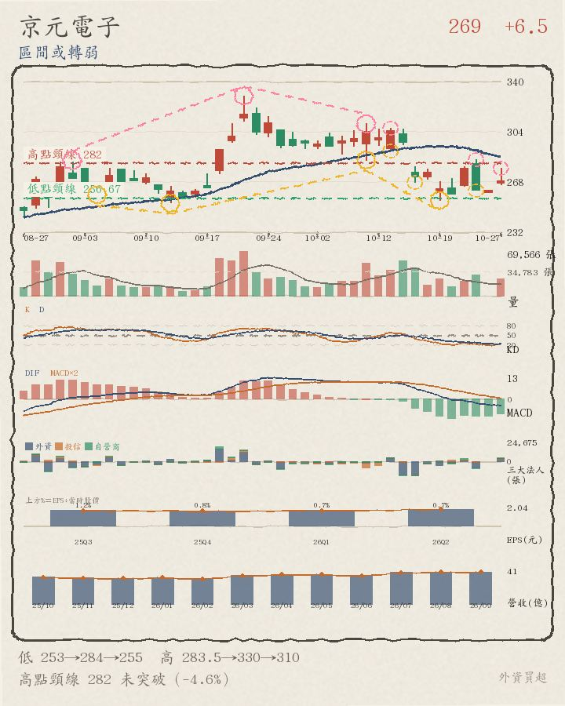
今天收紅、但成交量比平均少、跌破月線 286.55，離高點頸線 282 還差 4.6%，轉折還沒走出明顯方向。
- 月線位置：收盤 269 在月線 286.55 之下；5 日線 266.3 也在月線之下（短均在下）；月線走平或向下、5 日線走平或向下
- 量能：成交量是 20 日均量的 0.91 倍，比 20 日均量少一些；收紅但量縮，量價背離
- 關鍵價位：高點頸線 282 還沒突破，差 4.6%；最近轉折高點 310（低於 13.2%）；最近轉折低點 255（高於 5.5%）
- 轉折結構：低點 253、284、255 與高點 283.5、330、310 都沒有明顯遞增，屬於區間震盪或轉弱；還沒確認的轉折低點 10-15 268、10-22 262；還沒確認的轉折高點 10-22 284.5、10-27 278（圖上虛線小圈）
區間或轉弱 成交金額 64.28 億・全榜第 40 名（上市第 34 名）
好條件 1/7：月線向上
不好條件 4/5：在月線之下、相對大盤弱、今日下跌、外資賣超
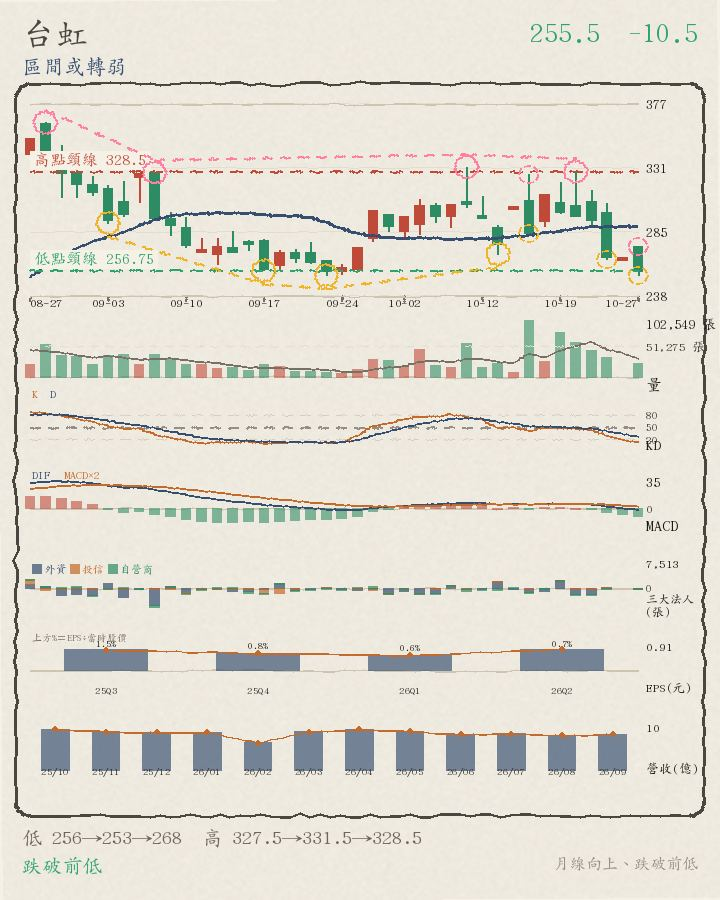
今天收黑、成交量也比平均少、跌破月線 288.55，跌破前一個轉折低點（高點頸線 328.5 還在收盤上方），轉折還沒走出明顯方向。
- 月線位置：收盤 255.5 在月線 288.55 之下；5 日線 275.3 也在月線之下（短均在下）；月線向上、5 日線走平或向下
- 量能：成交量是 20 日均量的 0.71 倍，比 20 日均量少很多
- 關鍵價位：高點頸線 328.5 還沒突破、還在收盤上方 22.2%；最近轉折高點 328.5（低於 22.2%）；最近轉折低點 268.5（低於 4.8%）
- 轉折結構：低點 256.5、253、268.5 與高點 327.5、331.5、328.5 都沒有明顯遞增，屬於區間震盪或轉弱；還沒確認的轉折低點 10-22 264.5、10-27 253；還沒確認的轉折高點 10-15 326.5、10-27 274（圖上虛線小圈）
騰輝電子-KY 6672 上市
533 -48.0
上升趨勢（底底高＋頭頭高） 成交金額 61.77 億・全榜第 41 名（上市第 35 名）
好條件 4/7：站上月線、月線向上、底底高、頭頭高
不好條件 3/5：相對大盤弱、今日下跌、外資賣超
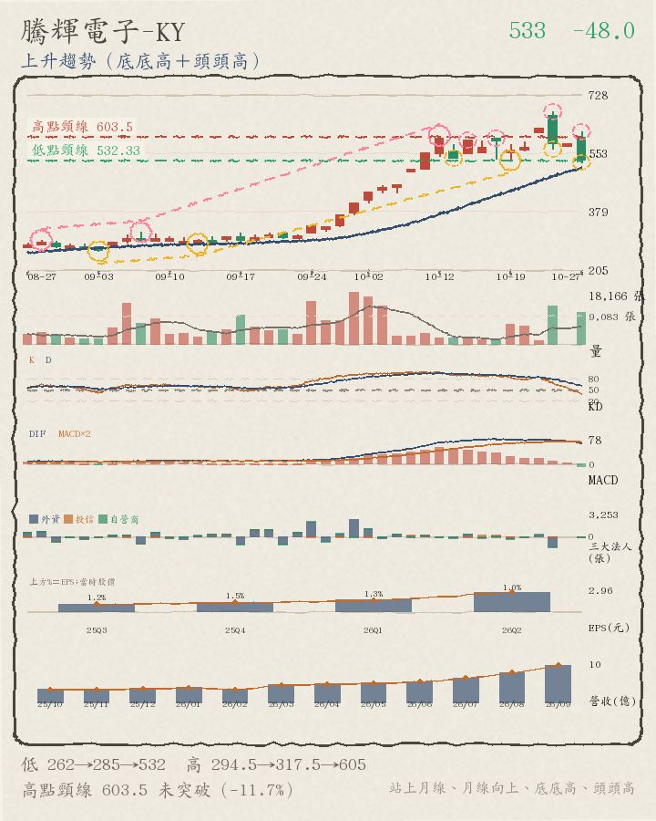
今天帶量收黑、站上月線 510.05，離高點頸線 603.5 還差 11.7%，轉折結構仍是底底高＋頭頭高。
- 月線位置：收盤 533 在月線 510.05 之上；5 日線 578.4 也在月線之上（短均在上）；月線向上、5 日線向上
- 量能：成交量是 20 日均量的 1.63 倍，比 20 日均量大不少；收黑卻量增，量價背離
- 關鍵價位：高點頸線 603.5 還沒突破，差 11.7%；最近轉折高點 605（低於 11.9%）；最近轉折低點 532（高於 0.2%）
- 轉折結構：低點 261.5、285、532 一路墊高 103.4%、高點 294.5、317.5、605 也一路墊高 105.4%，是底底高＋頭頭高；還沒確認的轉折低點 10-22 565、10-27 526；還沒確認的轉折高點 10-22 677、10-27 618（圖上虛線小圈）
高點墊高、底部不穩 成交金額 61.04 億・全榜第 42 名（上市第 36 名）
好條件 2/7：頭頭高、外資買超
不好條件 4/5：在月線之下、月線下彎、相對大盤弱、今日下跌
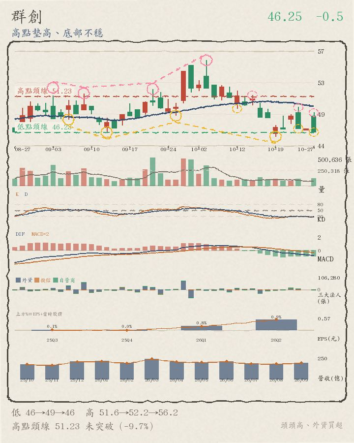
今天收黑、成交量也比平均少、跌破月線 49.837，離高點頸線 51.23 還差 9.7%，高點還在墊高（但底部沒同步墊高）。
- 月線位置：收盤 46.25 在月線 49.837 之下；5 日線 47.01 也在月線之下（短均在下）；月線走平或向下、5 日線走平或向下
- 量能：成交量是 20 日均量的 0.77 倍，比 20 日均量少很多
- 關鍵價位：高點頸線 51.23 還沒突破，差 9.7%；最近轉折高點 56.2（低於 17.7%）；最近轉折低點 45.65（高於 1.3%）
- 轉折結構：高點 51.6、52.2、56.2 墊高 8.9%（頭頭高），但低點 46.25、48.55、45.65 沒有同步墊高；還沒確認的轉折低點 10-22 46.75、10-27 46.25；還沒確認的轉折高點 10-22 49.7、10-27 48.95（圖上虛線小圈）
區間或轉弱 成交金額 59.28 億・全榜第 43 名（上市第 37 名）
好條件 2/7：站上月線、月線向上
不好條件 3/5：相對大盤弱、今日下跌、外資賣超
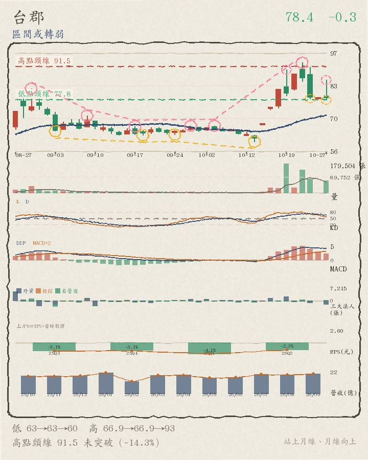
今天帶量收黑、站上月線 71.32，離高點頸線 91.5 還差 14.3%，轉折還沒走出明顯方向。
- 月線位置：收盤 78.4 在月線 71.32 之上；5 日線 82.14 也在月線之上（短均在上）；月線向上、5 日線向上
- 量能：成交量是 20 日均量的 2.66 倍，比 20 日均量大不少；收黑卻量增，量價背離
- 關鍵價位：高點頸線 91.5 還沒突破，差 14.3%；最近轉折高點 93（低於 15.7%）；最近轉折低點 60.3（高於 30.0%）
- 轉折結構：低點 63、63.3、60.3 與高點 66.9、66.9、93 都沒有明顯遞增，屬於區間震盪或轉弱；還沒確認的轉折低點 10-22 78.1、10-27 77.5；還沒確認的轉折高點 10-19 90、10-27 85.8（圖上虛線小圈）
區間或轉弱 成交金額 58.41 億・全榜第 44 名（上市第 38 名）
好條件 2/7：外資買超、量價攻擊（收紅＋大量）
不好條件 2/5：在月線之下、月線下彎
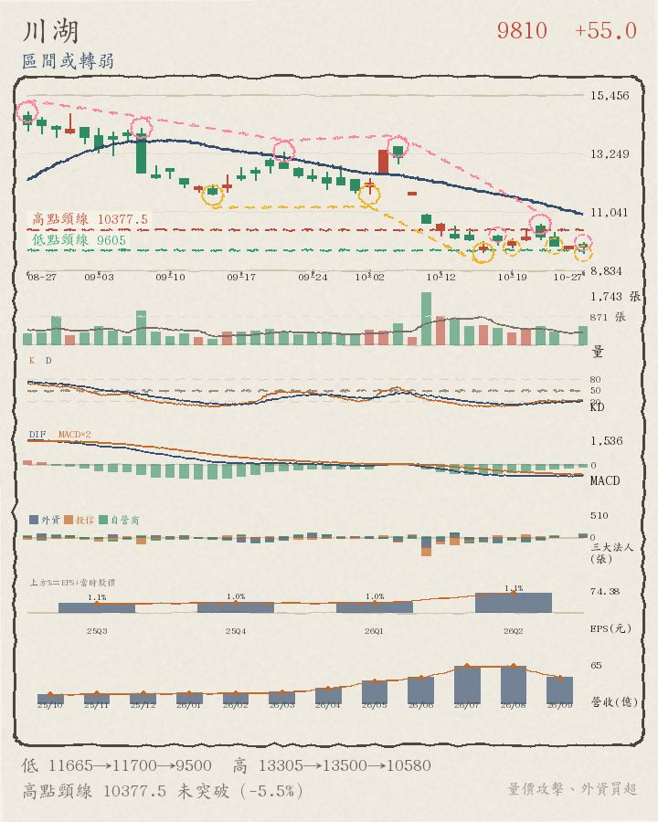
今天帶量收紅、跌破月線 10955，離高點頸線 10377.5 還差 5.5%，轉折還沒走出明顯方向。
- 月線位置：收盤 9810 在月線 10955 之下；5 日線 9900 也在月線之下（短均在下）；月線走平或向下、5 日線走平或向下
- 量能：成交量是 20 日均量的 1.06 倍，比 20 日均量大一些；收紅又量增，量價配合
- 關鍵價位：高點頸線 10377.5 還沒突破，差 5.5%；最近轉折高點 10580（低於 7.3%）；最近轉折低點 9500（高於 3.3%）
- 轉折結構：低點 11665、11700、9500 與高點 13305、13500、10580 都沒有明顯遞增，屬於區間震盪或轉弱；還沒確認的轉折低點 10-22 9755、10-27 9475；還沒確認的轉折高點 10-16 10175、10-27 9890（圖上虛線小圈）
上升趨勢（底底高＋頭頭高） 成交金額 53.88 億・全榜第 46 名（上市第 39 名）
好條件 3/7：月線向上、底底高、頭頭高
不好條件 4/5：在月線之下、相對大盤弱、今日下跌、外資賣超
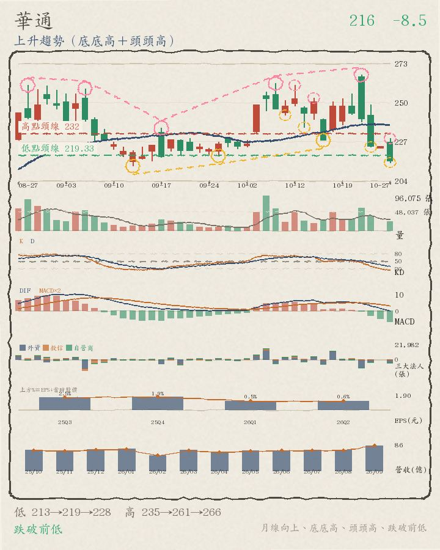
今天收黑、成交量也比平均少、跌破月線 236.95，跌破前一個轉折低點（高點頸線 232 還在收盤上方），轉折結構仍是底底高＋頭頭高。
- 月線位置：收盤 216 在月線 236.95 之下；5 日線 229.8 也在月線之下（短均在下）；月線向上、5 日線走平或向下
- 量能：成交量是 20 日均量的 0.74 倍，比 20 日均量少很多
- 關鍵價位：高點頸線 232 還沒突破、還在收盤上方 6.9%；最近轉折高點 266（低於 18.8%）；最近轉折低點 228（低於 5.3%）
- 轉折結構：低點 213、219、228 一路墊高 7.0%、高點 235、261、266 也一路墊高 13.2%，是底底高＋頭頭高；還沒確認的轉折低點 10-22 224、10-27 215；還沒確認的轉折高點 10-14 252.5、10-27 229（圖上虛線小圈）
上升趨勢（底底高＋頭頭高） 成交金額 52.97 億・全榜第 47 名（上市第 40 名）
好條件 5/7：站上月線、月線向上、底底高、頭頭高、外資買超
不好條件 2/5：相對大盤弱、今日下跌
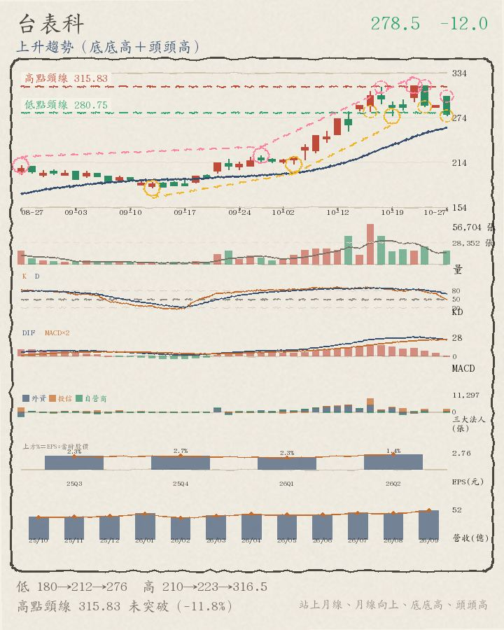
今天收黑、成交量也比平均少、站上月線 260.675，離高點頸線 315.83 還差 11.8%，轉折結構仍是底底高＋頭頭高。
- 月線位置：收盤 278.5 在月線 260.675 之上；5 日線 292.8 也在月線之上（短均在上）；月線向上、5 日線向上
- 量能：成交量是 20 日均量的 0.94 倍，比 20 日均量少一些
- 關鍵價位：高點頸線 315.83 還沒突破，差 11.8%；最近轉折高點 316.5（低於 12.0%）；最近轉折低點 276（高於 0.9%）
- 轉折結構：低點 179.5、211.5、276 一路墊高 53.8%、高點 210、223、316.5 也一路墊高 50.7%，是底底高＋頭頭高；還沒確認的轉折低點 10-22 288.5、10-27 276.5；還沒確認的轉折高點 10-22 316.5、10-27 302.5（圖上虛線小圈）
剛突破前高 成交金額 49.71 億・全榜第 49 名（上市第 41 名）
好條件 4/7：站上月線、頭頭高、外資買超、量價攻擊（收紅＋大量）
不好條件 1/5：月線下彎
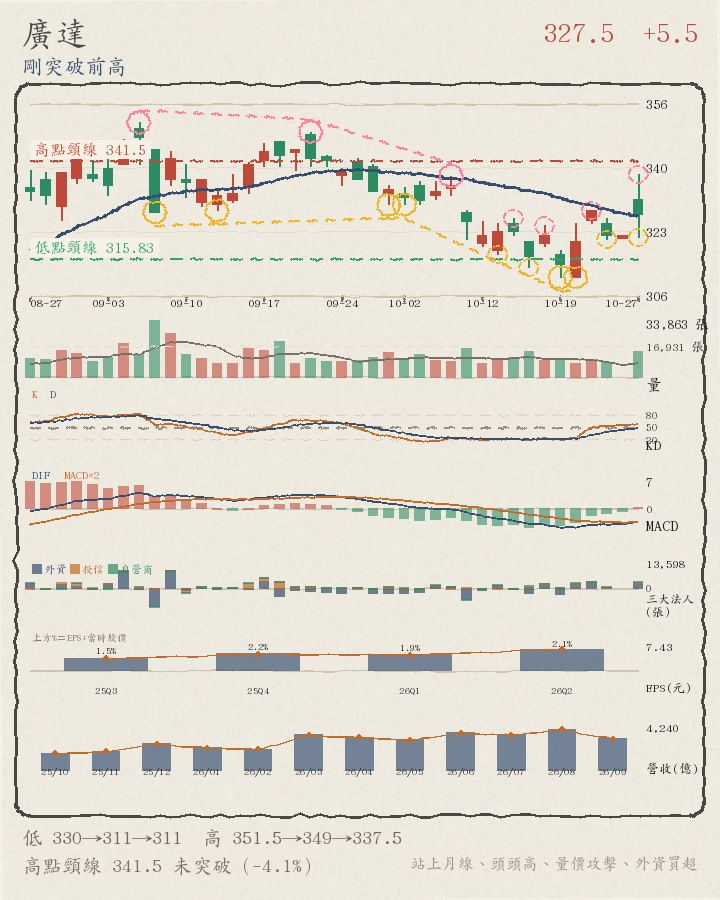
今天帶量收紅、站上月線 327.05，離高點頸線 341.5 還差 4.1%，高點還在墊高（但底部沒同步墊高）。
- 月線位置：收盤 327.5 在月線 327.05 之上；5 日線 324.1 也在月線之下（短均在下）；月線走平或向下、5 日線向上
- 量能：成交量是 20 日均量的 1.40 倍，比 20 日均量大不少；收紅又量增，量價配合
- 關鍵價位：高點頸線 341.5 還沒突破，差 4.1%；最近轉折高點 337.5（低於 3.0%）；最近轉折低點 311（高於 5.3%）
- 轉折結構：高點 351.5、349、337.5 墊高 0.1%（頭頭高），但低點 330、311、311 沒有同步墊高；還沒確認的轉折低點 10-22 321、10-27 321.5；還沒確認的轉折高點 10-21 328.5、10-27 338（圖上虛線小圈）
底部墊高、突破前高 成交金額 48.26 億・全榜第 50 名（上市第 42 名）
好條件 7/7：站上月線、月線向上、底底高、頭頭高、突破頸線、外資買超、量價攻擊（收紅＋大量）
不好條件 0/5：無
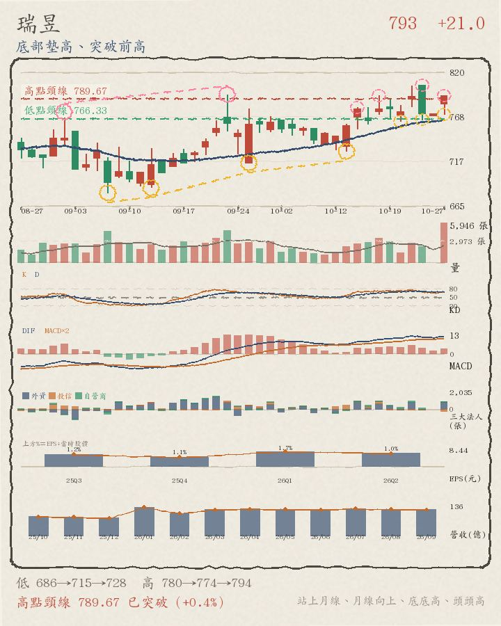
今天帶量收紅、站上月線 764.55，已站上高點頸線 789.67，轉折結構仍是底底高＋頭頭高。
- 月線位置：收盤 793 在月線 764.55 之上；5 日線 780.6 也在月線之上（短均在上）；月線向上、5 日線向上
- 量能：成交量是 20 日均量的 2.46 倍，比 20 日均量大不少；收紅又量增，量價配合
- 關鍵價位：高點頸線 789.67 已站上；最近轉折高點 794（低於 0.1%）；最近轉折低點 728（高於 8.9%）
- 轉折結構：低點 686、715、728 一路墊高 6.1%、高點 780、774、794 也一路墊高 1.4%，是底底高＋頭頭高；還沒確認的轉折低點 10-22 765、10-27 771；還沒確認的轉折高點 10-22 805、10-27 793（圖上虛線小圈）
區間或轉弱 成交金額 48.12 億・全榜第 51 名（上市第 43 名）
好條件 0/7：無
不好條件 5/5：在月線之下、月線下彎、相對大盤弱、今日下跌、外資賣超
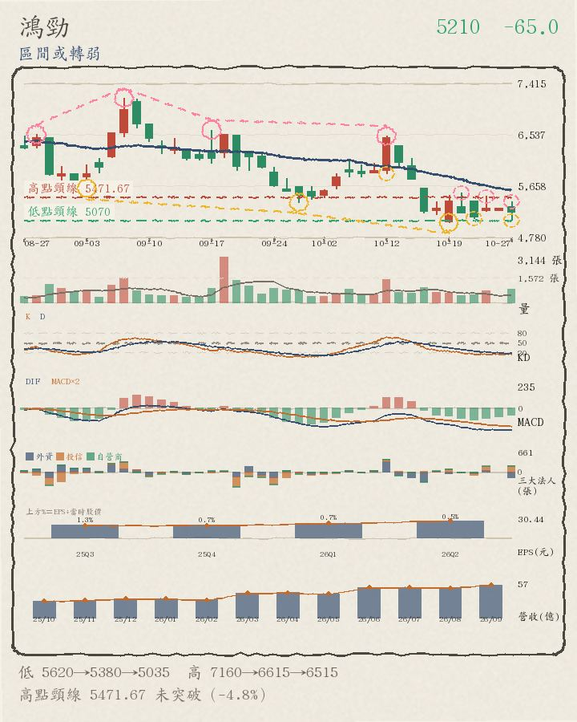
今天帶量收黑、跌破月線 5585.25，離高點頸線 5471.67 還差 4.8%，轉折還沒走出明顯方向。
- 月線位置：收盤 5210 在月線 5585.25 之下；5 日線 5219 也在月線之下（短均在下）；月線走平或向下、5 日線走平或向下
- 量能：成交量是 20 日均量的 1.28 倍，比 20 日均量大不少；收黑卻量增，量價背離
- 關鍵價位：高點頸線 5471.67 還沒突破，差 4.8%；最近轉折高點 6515（低於 20.0%）；最近轉折低點 5035（高於 3.5%）
- 轉折結構：低點 5620、5380、5035 與高點 7160、6615、6515 都沒有明顯遞增，屬於區間震盪或轉弱；還沒確認的轉折低點 10-21 5105、10-27 5070；還沒確認的轉折高點 10-22 5480、10-27 5395（圖上虛線小圈）
區間或轉弱 成交金額 45.9 億・全榜第 52 名（上市第 44 名）
好條件 4/7：站上月線、月線向上、外資買超、量價攻擊（收紅＋大量）
不好條件 0/5：無
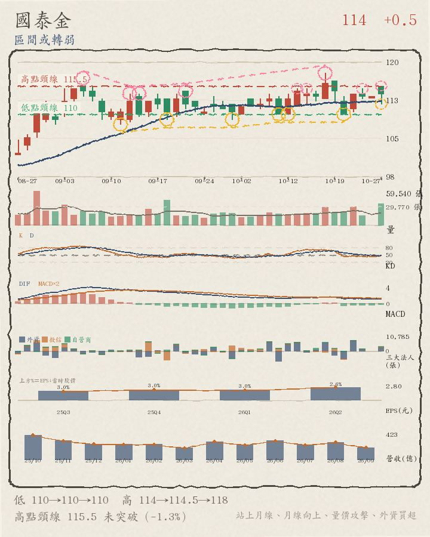
今天帶量收紅、站上月線 112.6，離高點頸線 115.5 還差 1.3%，轉折還沒走出明顯方向。
- 月線位置：收盤 114 在月線 112.6 之上；5 日線 113 也在月線之上（短均在上）；月線向上、5 日線走平或向下
- 量能：成交量是 20 日均量的 1.87 倍，比 20 日均量大不少；收紅又量增，量價配合
- 關鍵價位：高點頸線 115.5 還沒突破，差 1.3%；最近轉折高點 118（低於 3.4%）；最近轉折低點 110（高於 3.6%）
- 轉折結構：低點 110、110、110 與高點 114、114.5、118 都沒有明顯遞增，屬於區間震盪或轉弱；還沒確認的轉折低點 10-27 112；還沒確認的轉折高點 10-22 115、10-27 115.5（圖上虛線小圈）
區間或轉弱 成交金額 44.43 億・全榜第 53 名（上市第 45 名）
好條件 1/7：月線向上
不好條件 4/5：在月線之下、相對大盤弱、今日下跌、外資賣超
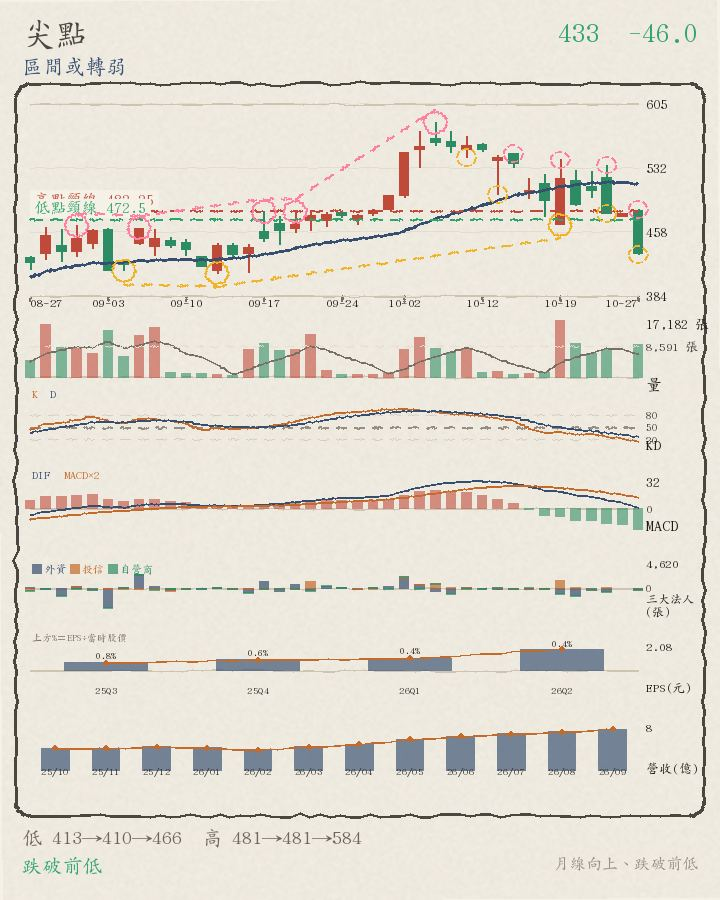
今天帶量收黑、跌破月線 512.957，跌破前一個轉折低點（高點頸線 482.25 還在收盤上方），轉折還沒走出明顯方向。
- 月線位置：收盤 433 在月線 512.957 之下；5 日線 477.2 也在月線之下（短均在下）；月線向上、5 日線走平或向下
- 量能：成交量是 20 日均量的 1.89 倍，比 20 日均量大不少；收黑卻量增，量價背離
- 關鍵價位：高點頸線 482.25 還沒突破、還在收盤上方 10.2%；最近轉折高點 584（低於 25.9%）；最近轉折低點 466（低於 7.1%）
- 轉折結構：低點 413、410.5、466 與高點 481、481、584 都沒有明顯遞增，屬於區間震盪或轉弱；還沒確認的轉折低點 10-22 479、10-27 431.5；還沒確認的轉折高點 10-22 535、10-27 483.5（圖上虛線小圈）
高點墊高、底部不穩 成交金額 43.58 億・全榜第 54 名（上市第 46 名）
好條件 3/7：頭頭高、外資買超、量價攻擊（收紅＋大量）
不好條件 2/5：在月線之下、月線下彎
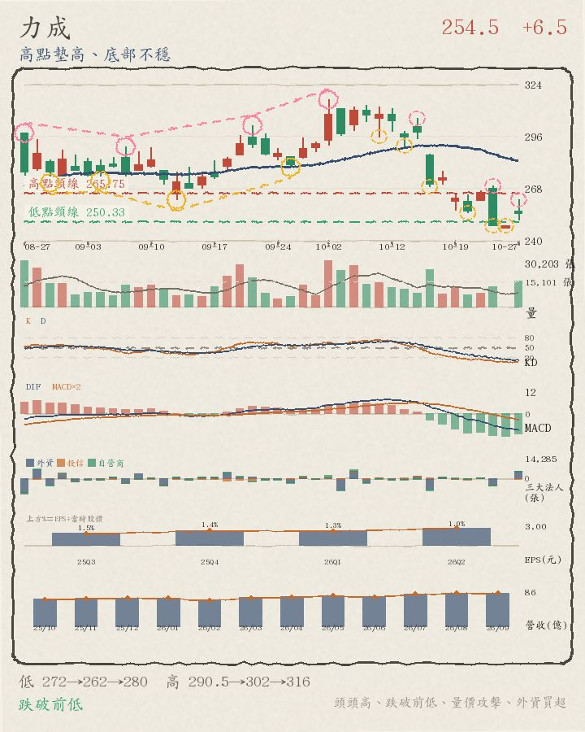
今天帶量收紅、跌破月線 283.025，跌破前一個轉折低點（高點頸線 265.75 還在收盤上方），高點還在墊高（但底部沒同步墊高）。
- 月線位置：收盤 254.5 在月線 283.025 之下；5 日線 254.5 也在月線之下（短均在下）；月線走平或向下、5 日線走平或向下
- 量能：成交量是 20 日均量的 1.22 倍，比 20 日均量大不少；收紅又量增，量價配合
- 關鍵價位：高點頸線 265.75 還沒突破、還在收盤上方 4.2%；最近轉折高點 316（低於 19.5%）；最近轉折低點 279.5（低於 8.9%）
- 轉折結構：高點 290.5、302、316 墊高 8.8%（頭頭高），但低點 272.5、262、279.5 沒有同步墊高；還沒確認的轉折低點 10-22 248、10-23 248；還沒確認的轉折高點 10-22 269.5、10-27 262（圖上虛線小圈）
區間或轉弱 成交金額 43.17 億・全榜第 55 名（上市第 47 名）
好條件 0/7：無
不好條件 4/5：在月線之下、月線下彎、相對大盤弱、外資賣超
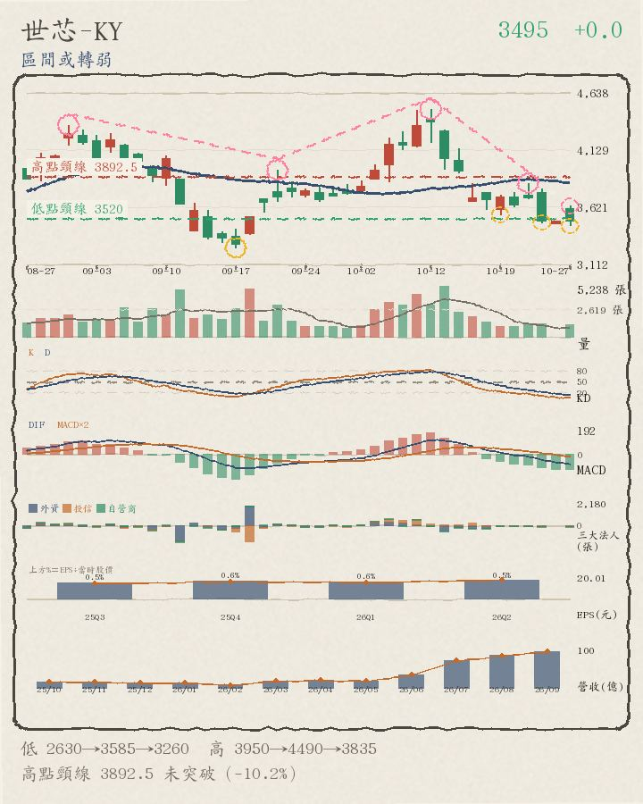
今天收黑、成交量也比平均少、跌破月線 3838.25，離高點頸線 3892.5 還差 10.2%，轉折還沒走出明顯方向。
- 月線位置：收盤 3495 在月線 3838.25 之下；5 日線 3567 也在月線之下（短均在下）；月線走平或向下、5 日線走平或向下
- 量能：成交量是 20 日均量的 0.58 倍，比 20 日均量少很多
- 關鍵價位：高點頸線 3892.5 還沒突破，差 10.2%；最近轉折高點 3835（低於 8.9%）；最近轉折低點 3260（高於 7.2%）
- 轉折結構：低點 2630、3585、3260 與高點 3950、4490、3835 都沒有明顯遞增，屬於區間震盪或轉弱；還沒確認的轉折低點 10-22 3485、10-27 3455；還沒確認的轉折高點 10-27 3630（圖上虛線小圈）
高點墊高、底部不穩 成交金額 43.08 億・全榜第 56 名（上市第 48 名）
好條件 3/7：站上月線、月線向上、頭頭高
不好條件 1/5：外資賣超
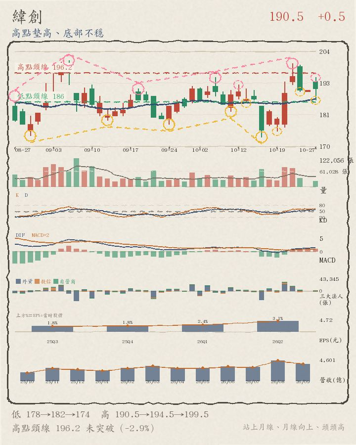
今天收紅、但成交量比平均少、站上月線 187.025，離高點頸線 196.2 還差 2.9%，高點還在墊高（但底部沒同步墊高）。
- 月線位置：收盤 190.5 在月線 187.025 之上；5 日線 190.9 也在月線之上（短均在上）；月線向上、5 日線向上
- 量能：成交量是 20 日均量的 0.56 倍，比 20 日均量少很多；收紅但量縮，量價背離
- 關鍵價位：高點頸線 196.2 還沒突破，差 2.9%；最近轉折高點 199.5（低於 4.5%）；最近轉折低點 173.5（高於 9.8%）
- 轉折結構：高點 190.5、194.5、199.5 墊高 4.7%（頭頭高），但低點 178、182.5、173.5 沒有同步墊高；還沒確認的轉折低點 10-22 189.5、10-27 186.5；還沒確認的轉折高點 10-12 192、10-27 194.5（圖上虛線小圈）
區間或轉弱 成交金額 42.05 億・全榜第 57 名（上市第 49 名）
好條件 1/7：外資買超
不好條件 4/5：在月線之下、月線下彎、相對大盤弱、今日下跌
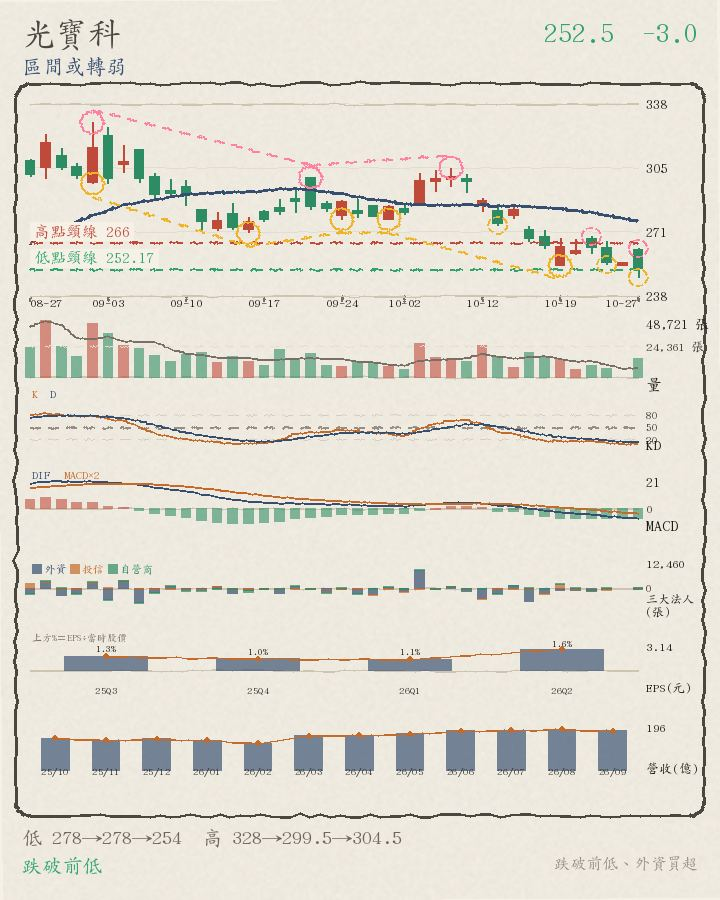
今天帶量收黑、跌破月線 277.025，跌破前一個轉折低點（高點頸線 266 還在收盤上方），轉折還沒走出明顯方向。
- 月線位置：收盤 252.5 在月線 277.025 之下；5 日線 257.8 也在月線之下（短均在下）；月線走平或向下、5 日線走平或向下
- 量能：成交量是 20 日均量的 1.16 倍，比 20 日均量大不少；收黑卻量增，量價背離
- 關鍵價位：高點頸線 266 還沒突破、還在收盤上方 5.1%；最近轉折高點 304.5（低於 17.1%）；最近轉折低點 254（低於 0.6%）
- 轉折結構：低點 278、278、254 與高點 328、299.5、304.5 都沒有明顯遞增，屬於區間震盪或轉弱；還沒確認的轉折低點 10-22 254.5、10-27 248；還沒確認的轉折高點 10-21 269、10-27 263（圖上虛線小圈）
高點墊高、底部不穩 成交金額 41.1 億・全榜第 59 名（上市第 50 名）
好條件 5/7：站上月線、月線向上、頭頭高、外資買超、量價攻擊（收紅＋大量）
不好條件 0/5：無
今天帶量收紅、站上月線 70.825，離高點頸線 75.9 還差 1.2%，高點還在墊高（但底部沒同步墊高）。
- 月線位置：收盤 75 在月線 70.825 之上；5 日線 74.24 也在月線之上（短均在上）；月線向上、5 日線向上
- 量能：成交量是 20 日均量的 1.67 倍，比 20 日均量大不少；收紅又量增，量價配合
- 關鍵價位：高點頸線 75.9 還沒突破，差 1.2%；最近轉折高點 75.3（低於 0.4%）；最近轉折低點 67.3（高於 11.4%）
- 轉折結構：高點 69.5、72、75.3 墊高 8.3%（頭頭高），但低點 66、67.1、67.3 沒有同步墊高；還沒確認的轉折低點 10-20 71.5、10-27 74；還沒確認的轉折高點 10-22 75.5、10-27 76.9（圖上虛線小圈）
高點墊高、底部不穩 成交金額 204.18 億・全榜第 9 名（上櫃第 1 名）
好條件 3/7：月線向上、頭頭高、外資買超
不好條件 3/5：在月線之下、相對大盤弱、今日下跌
今天帶量收黑、跌破月線 1590.75，離高點頸線 1446.67 還差 11.5%，高點還在墊高（但底部沒同步墊高）。
- 月線位置：收盤 1280 在月線 1590.75 之下；5 日線 1434 也在月線之下（短均在下）；月線向上、5 日線走平或向下
- 量能：成交量是 20 日均量的 1.59 倍，比 20 日均量大不少；收黑卻量增，量價背離
- 關鍵價位：高點頸線 1446.67 還沒突破，差 11.5%；最近轉折高點 1835（低於 30.2%）；最近轉折低點 1275（高於 0.4%）
- 轉折結構：高點 1430、1460、1835 墊高 28.3%（頭頭高），但低點 1395、1295、1275 沒有同步墊高；還沒確認的轉折低點 10-22 1410、10-27 1280；還沒確認的轉折高點 10-20 1650、10-27 1450（圖上虛線小圈）
區間或轉弱 成交金額 141.97 億・全榜第 17 名（上櫃第 2 名）
好條件 1/7：月線向上
不好條件 3/5：在月線之下、相對大盤弱、外資賣超
今天帶量收黑、跌破月線 466.05，離高點頸線 500.67 還差 7.4%，轉折還沒走出明顯方向。
- 月線位置：收盤 463.5 在月線 466.05 之下；5 日線 457.8 也在月線之下（短均在下）；月線向上、5 日線向上
- 量能：成交量是 20 日均量的 2.97 倍，比 20 日均量大不少；收黑卻量增，量價背離
- 關鍵價位：高點頸線 500.67 還沒突破，差 7.4%；最近轉折高點 530（低於 12.5%）；最近轉折低點 399（高於 16.2%）
- 轉折結構：低點 407、436.5、399 與高點 496、487、530 都沒有明顯遞增，屬於區間震盪或轉弱；還沒確認的轉折低點 10-13 444、10-27 456；還沒確認的轉折高點 10-22 506、10-27 509（圖上虛線小圈）
底部墊高、未過前高 成交金額 98.77 億・全榜第 28 名（上櫃第 3 名）
好條件 2/7：月線向上、底底高
不好條件 4/5：在月線之下、相對大盤弱、今日下跌、外資賣超
今天收黑、成交量也比平均少、跌破月線 131.825，離高點頸線 139.25 還差 5.9%，底部還在墊高（但高點沒同步創高）。
- 月線位置：收盤 131 在月線 131.825 之下；5 日線 142 也在月線之上（短均在上）；月線向上、5 日線向上
- 量能：成交量是 20 日均量的 0.86 倍，比 20 日均量少一些
- 關鍵價位：高點頸線 139.25 還沒突破，差 5.9%；最近轉折高點 161.5（低於 18.9%）；最近轉折低點 124（高於 5.6%）
- 轉折結構：低點 111、113、124 墊高 11.7%（底底高），但高點 135、129.5、161.5 沒有同步創高；還沒確認的轉折低點 10-22 137、10-27 128.5；還沒確認的轉折高點 10-14 140.5、10-27 142（圖上虛線小圈）
區間或轉弱 成交金額 94.79 億・全榜第 30 名（上櫃第 4 名）
好條件 0/7：無
不好條件 5/5：在月線之下、月線下彎、相對大盤弱、今日下跌、外資賣超
今天收黑、成交量也比平均少、跌破月線 999，跌破前一個轉折低點（高點頸線 1013.33 還在收盤上方），轉折還沒走出明顯方向。
- 月線位置：收盤 814 在月線 999 之下；5 日線 838 也在月線之下（短均在下）；月線走平或向下、5 日線走平或向下
- 量能：成交量是 20 日均量的 0.83 倍，比 20 日均量少很多
- 關鍵價位：高點頸線 1013.33 還沒突破、還在收盤上方 19.7%；最近轉折高點 1260（低於 35.4%）；最近轉折低點 872（低於 6.7%）
- 轉折結構：低點 931、875、872 與高點 1015、1010、1260 都沒有明顯遞增，屬於區間震盪或轉弱；還沒確認的轉折低點 10-22 815、10-27 807；還沒確認的轉折高點 10-21 903、10-27 857（圖上虛線小圈）
高點墊高、底部不穩 成交金額 74.67 億・全榜第 36 名（上櫃第 5 名）
好條件 2/7：頭頭高、量價攻擊（收紅＋大量）
不好條件 3/5：在月線之下、月線下彎、外資賣超
今天收紅、跌破月線 2720，跌破前一個轉折低點（高點頸線 2620 還在收盤上方），高點還在墊高（但底部沒同步墊高）。
- 月線位置：收盤 2500 在月線 2720 之下；5 日線 2473 也在月線之下（短均在下）；月線走平或向下、5 日線走平或向下
- 量能：成交量是 20 日均量的 1.01 倍，跟 20 日均量差不多
- 關鍵價位：高點頸線 2620 還沒突破、還在收盤上方 4.6%；最近轉折高點 3210（低於 22.1%）；最近轉折低點 2585（低於 3.3%）
- 轉折結構：高點 2930、2950、3210 墊高 9.6%（頭頭高），但低點 1450、2650、2585 沒有同步墊高；還沒確認的轉折低點 10-19 2385、10-22 2365；還沒確認的轉折高點 10-21 2640、10-27 2600（圖上虛線小圈）
區間或轉弱 成交金額 66.73 億・全榜第 39 名（上櫃第 6 名）
好條件 0/7：無
不好條件 3/5：在月線之下、月線下彎、外資賣超
今天收紅、但成交量比平均少、跌破月線 533.5，離高點頸線 518 還差 5.2%，轉折還沒走出明顯方向。
- 月線位置：收盤 491 在月線 533.5 之下；5 日線 490 也在月線之下（短均在下）；月線走平或向下、5 日線走平或向下
- 量能：成交量是 20 日均量的 0.59 倍，比 20 日均量少很多；收紅但量縮，量價背離
- 關鍵價位：高點頸線 518 還沒突破，差 5.2%；最近轉折高點 630（低於 22.1%）；最近轉折低點 454（高於 8.1%）
- 轉折結構：低點 420、482、454 與高點 492、478、630 都沒有明顯遞增，屬於區間震盪或轉弱；還沒確認的轉折低點 10-22 482、10-27 479；還沒確認的轉折高點 10-22 526、10-27 510（圖上虛線小圈）
區間或轉弱 成交金額 57.76 億・全榜第 45 名（上櫃第 7 名）
好條件 1/7：量價攻擊（收紅＋大量）
不好條件 4/5：在月線之下、月線下彎、相對大盤弱、外資賣超
今天帶量收紅、跌破月線 17550，離高點頸線 16823.3 還差 4.8%，轉折還沒走出明顯方向。
- 月線位置：收盤 16015 在月線 17550 之下；5 日線 16090 也在月線之下（短均在下）；月線走平或向下、5 日線走平或向下
- 量能：成交量是 20 日均量的 1.32 倍，比 20 日均量大不少；收紅又量增，量價配合
- 關鍵價位：高點頸線 16823.3 還沒突破，差 4.8%；最近轉折高點 18465（低於 13.3%）；最近轉折低點 15500（高於 3.3%）
- 轉折結構：低點 17170、15975、15500 與高點 21800、19895、18465 都沒有明顯遞增，屬於區間震盪或轉弱；還沒確認的轉折低點 10-22 15800、10-27 15800；還沒確認的轉折高點 10-22 17000、10-27 16850（圖上虛線小圈）
區間或轉弱 成交金額 51.72 億・全榜第 48 名（上櫃第 8 名）
好條件 2/7：外資買超、量價攻擊（收紅＋大量）
不好條件 2/5：在月線之下、月線下彎
今天帶量收紅、跌破月線 1995，離高點頸線 1947.5 還差 1.9%，轉折還沒走出明顯方向。
- 月線位置：收盤 1910 在月線 1995 之下；5 日線 1889 也在月線之下（短均在下）；月線走平或向下、5 日線走平或向下
- 量能：成交量是 20 日均量的 1.06 倍，比 20 日均量大一些；收紅又量增，量價配合
- 關鍵價位：高點頸線 1947.5 還沒突破，差 1.9%；最近轉折高點 2350（低於 18.7%）；最近轉折低點 1785（高於 7.0%）
- 轉折結構：低點 1900、2080、1785 與高點 2195、2160、2350 都沒有明顯遞增，屬於區間震盪或轉弱；還沒確認的轉折低點 10-22 1870、10-27 1865；還沒確認的轉折高點 10-22 1945、10-27 1950（圖上虛線小圈）
高點墊高、底部不穩 成交金額 42 億・全榜第 58 名（上櫃第 9 名）
好條件 2/7：頭頭高、外資買超
不好條件 2/5：在月線之下、月線下彎
今天收紅、但成交量比平均少、跌破月線 253.575，離高點頸線 256.5 還差 3.3%，高點還在墊高（但底部沒同步墊高）。
- 月線位置：收盤 248 在月線 253.575 之下；5 日線 250.6 也在月線之下（短均在下）；月線走平或向下、5 日線走平或向下
- 量能：成交量是 20 日均量的 0.86 倍，比 20 日均量少一些；收紅但量縮，量價背離
- 關鍵價位：高點頸線 256.5 還沒突破，差 3.3%；最近轉折高點 291.5（低於 14.9%）；最近轉折低點 241.5（高於 2.7%）
- 轉折結構：高點 251.5、289.5、291.5 墊高 15.9%（頭頭高），但低點 238、238、241.5 沒有同步墊高；還沒確認的轉折低點 10-22 245、10-27 246.5；還沒確認的轉折高點 10-22 279.5、10-27 261.5（圖上虛線小圈）
區間或轉弱 成交金額 39.09 億・全榜第 60 名（上櫃第 10 名）
好條件 0/7：無
不好條件 5/5：在月線之下、月線下彎、相對大盤弱、今日下跌、外資賣超
今天收黑、成交量也比平均少、跌破月線 5326.5，跌破前一個轉折低點（高點頸線 5270 還在收盤上方），轉折還沒走出明顯方向。
- 月線位置：收盤 4790 在月線 5326.5 之下；5 日線 4895 也在月線之下（短均在下）；月線走平或向下、5 日線走平或向下
- 量能：成交量是 20 日均量的 0.92 倍，比 20 日均量少一些
- 關鍵價位：高點頸線 5270 還沒突破、還在收盤上方 9.1%；最近轉折高點 6160（低於 22.2%）；最近轉折低點 4995（低於 4.1%）
- 轉折結構：低點 5365、5090、4995 與高點 6060、5860、6160 都沒有明顯遞增，屬於區間震盪或轉弱；還沒確認的轉折低點 10-22 4850、10-27 4730；還沒確認的轉折高點 10-22 5170、10-27 5040（圖上虛線小圈）
剛突破前高 成交金額 36.38 億・全榜第 61 名（上櫃第 11 名）
好條件 1/7：頭頭高
不好條件 5/5：在月線之下、月線下彎、相對大盤弱、今日下跌、外資賣超

今天收黑、跌破月線 300.014，離高點頸線 304.4 還差 9.0%，高點還在墊高（但底部沒同步墊高）。
- 月線位置：收盤 277 在月線 300.014 之下；5 日線 281.5 也在月線之下（短均在下）；月線走平或向下、5 日線走平或向下
- 量能：成交量是 20 日均量的 0.99 倍，跟 20 日均量差不多
- 關鍵價位：高點頸線 304.4 還沒突破，差 9.0%；最近轉折高點 302.128（低於 8.3%）；最近轉折低點 248（高於 11.7%）
- 轉折結構：高點 302.128、302.128、302.128 墊高 3.4%（頭頭高），但低點 302.128、302.128、248 沒有同步墊高；還沒確認的轉折低點 10-15 302.128、10-27 274.5；還沒確認的轉折高點 10-22 312.5、10-27 309.5（圖上虛線小圈）
區間或轉弱 成交金額 35.12 億・全榜第 62 名（上櫃第 12 名）
好條件 0/7：無
不好條件 5/5：在月線之下、月線下彎、相對大盤弱、今日下跌、外資賣超
今天收黑、成交量也比平均少、跌破月線 1478.5，離高點頸線 1510 還差 11.6%，轉折還沒走出明顯方向。
- 月線位置：收盤 1335 在月線 1478.5 之下；5 日線 1365 也在月線之下（短均在下）；月線走平或向下、5 日線走平或向下
- 量能：成交量是 20 日均量的 0.75 倍，比 20 日均量少很多
- 關鍵價位：高點頸線 1510 還沒突破，差 11.6%；最近轉折高點 1515（低於 11.9%）；最近轉折低點 1320（高於 1.1%）
- 轉折結構：低點 1480、1395、1320 與高點 1505、1750、1515 都沒有明顯遞增，屬於區間震盪或轉弱；還沒確認的轉折低點 10-22 1335、10-27 1310；還沒確認的轉折高點 10-08 1570、10-27 1425（圖上虛線小圈）
區間或轉弱 成交金額 30.98 億・全榜第 63 名（上櫃第 13 名）
好條件 0/7：無
不好條件 3/5：在月線之下、月線下彎、外資賣超
今天收紅、但成交量比平均少、跌破月線 215.55，離高點頸線 213.75 還差 3.2%，轉折還沒走出明顯方向。
- 月線位置：收盤 207 在月線 215.55 之下；5 日線 205.8 也在月線之下（短均在下）；月線走平或向下、5 日線走平或向下
- 量能：成交量是 20 日均量的 0.48 倍，比 20 日均量少很多；收紅但量縮，量價背離
- 關鍵價位：高點頸線 213.75 還沒突破，差 3.2%；最近轉折高點 217（低於 4.6%）；最近轉折低點 194.5（高於 6.4%）
- 轉折結構：低點 208、211、194.5 與高點 238、238、217 都沒有明顯遞增，屬於區間震盪或轉弱；還沒確認的轉折低點 10-22 202.5、10-27 199.5；還沒確認的轉折高點 10-14 233、10-27 210.5（圖上虛線小圈）
上升趨勢（底底高＋頭頭高） 成交金額 26.81 億・全榜第 64 名（上櫃第 14 名）
好條件 4/7：月線向上、底底高、頭頭高、外資買超
不好條件 3/5：在月線之下、相對大盤弱、今日下跌
今天帶量收黑、跌破月線 225.35，轉折結構仍是底底高＋頭頭高。
- 月線位置：收盤 196 在月線 225.35 之下；5 日線 228.1 也在月線之上（短均在上）；月線向上、5 日線走平或向下
- 量能：成交量是 20 日均量的 1.41 倍，比 20 日均量大不少；收黑卻量增，量價背離
- 關鍵價位：最近轉折高點 293.5（低於 33.2%）；最近轉折低點 213.5（低於 8.2%）
- 轉折結構：低點 123.5、172.5、213.5 一路墊高 72.9%、高點 201、280.5、293.5 也一路墊高 46.0%，是底底高＋頭頭高；還沒確認的轉折低點 10-22 217.5、10-27 196；還沒確認的轉折高點 10-12 250.5、10-27 224（圖上虛線小圈）
區間或轉弱 成交金額 26.37 億・全榜第 65 名（上櫃第 15 名）
好條件 1/7：月線向上
不好條件 2/5：在月線之下、外資賣超
今天收紅、但成交量比平均少、跌破月線 1400.25，離高點頸線 1287.5 還差 0.2%，轉折還沒走出明顯方向。
- 月線位置：收盤 1285 在月線 1400.25 之下；5 日線 1291 也在月線之下（短均在下）；月線向上、5 日線走平或向下
- 量能：成交量是 20 日均量的 0.70 倍，比 20 日均量少很多；收紅但量縮，量價背離
- 關鍵價位：高點頸線 1287.5 還沒突破，差 0.2%；最近轉折高點 1680（低於 23.5%）；最近轉折低點 1180（高於 8.9%）
- 轉折結構：低點 1185、1180、1180 與高點 1435、1270、1680 都沒有明顯遞增，屬於區間震盪或轉弱；還沒確認的轉折低點 10-22 1260、10-27 1245；還沒確認的轉折高點 10-20 1430、10-27 1305（圖上虛線小圈）
上升趨勢（底底高＋頭頭高） 成交金額 23.83 億・全榜第 66 名（上櫃第 16 名）
好條件 2/7：底底高、頭頭高
不好條件 2/5：在月線之下、月線下彎
今天收紅、但成交量比平均少、跌破月線 2891，跌破前一個轉折低點（高點頸線 2782.5 還在收盤上方），轉折結構仍是底底高＋頭頭高。
- 月線位置：收盤 2515 在月線 2891 之下；5 日線 2546 也在月線之下（短均在下）；月線走平或向下、5 日線走平或向下
- 量能：成交量是 20 日均量的 0.81 倍，比 20 日均量少很多；收紅但量縮，量價背離
- 關鍵價位：高點頸線 2782.5 還沒突破、還在收盤上方 9.6%；最近轉折高點 3635（低於 30.8%）；最近轉折低點 2530（低於 0.6%）
- 轉折結構：低點 1995、2090、2530 一路墊高 26.8%、高點 2720、2875、3635 也一路墊高 33.6%，是底底高＋頭頭高；還沒確認的轉折低點 10-22 2470、10-27 2470；還沒確認的轉折高點 10-20 2770、10-27 2625（圖上虛線小圈）
區間或轉弱 成交金額 22.72 億・全榜第 67 名（上櫃第 17 名）
好條件 0/7：無
不好條件 5/5：在月線之下、月線下彎、相對大盤弱、今日下跌、外資賣超
今天帶量收黑、跌破月線 3865.25，離高點頸線 3820 還差 12.7%，轉折還沒走出明顯方向。
- 月線位置：收盤 3335 在月線 3865.25 之下；5 日線 3392 也在月線之下（短均在下）；月線走平或向下、5 日線走平或向下
- 量能：成交量是 20 日均量的 1.75 倍，比 20 日均量大不少；收黑卻量增，量價背離
- 關鍵價位：高點頸線 3820 還沒突破，差 12.7%；最近轉折高點 4630（低於 28.0%）；最近轉折低點 3145（高於 6.0%）
- 轉折結構：低點 4115、3145 與高點 5445、4630 都沒有明顯遞增，屬於區間震盪或轉弱；還沒確認的轉折低點 10-22 3390、10-27 3155；還沒確認的轉折高點 10-21 3520、10-27 3750（圖上虛線小圈）
高點墊高、底部不穩 成交金額 21.02 億・全榜第 68 名（上櫃第 18 名）
好條件 1/7：頭頭高
不好條件 5/5：在月線之下、月線下彎、相對大盤弱、今日下跌、外資賣超
今天帶量收黑、跌破月線 1475，跌破前一個轉折低點（高點頸線 1462.5 還在收盤上方），高點還在墊高（但底部沒同步墊高）。
- 月線位置：收盤 1275 在月線 1475 之下；5 日線 1335 也在月線之下（短均在下）；月線走平或向下、5 日線走平或向下
- 量能：成交量是 20 日均量的 1.29 倍，比 20 日均量大不少；收黑卻量增，量價背離
- 關鍵價位：高點頸線 1462.5 還沒突破、還在收盤上方 12.8%；最近轉折高點 1760（低於 27.6%）；最近轉折低點 1315（低於 3.0%）
- 轉折結構：高點 1580、1630、1760 墊高 11.4%（頭頭高），但低點 1310、1450、1315 沒有同步墊高；還沒確認的轉折低點 10-22 1320、10-27 1225；還沒確認的轉折高點 10-22 1470、10-27 1325（圖上虛線小圈）
區間或轉弱 成交金額 20.93 億・全榜第 69 名（上櫃第 19 名）
好條件 1/7：外資買超
不好條件 4/5：在月線之下、月線下彎、相對大盤弱、今日下跌
今天收黑、成交量也比平均少、跌破月線 118.85，跌破前一個轉折低點（高點頸線 140 還在收盤上方），轉折還沒走出明顯方向。
- 月線位置：收盤 102 在月線 118.85 之下；5 日線 105.4 也在月線之下（短均在下）；月線走平或向下、5 日線走平或向下
- 量能：成交量是 20 日均量的 0.30 倍，比 20 日均量少很多
- 關鍵價位：高點頸線 140 還沒突破、還在收盤上方 27.1%；最近轉折高點 140（低於 27.1%）；最近轉折低點 103.5（低於 1.4%）
- 轉折結構：低點 104、100、103.5 與高點 125、140、140 都沒有明顯遞增，屬於區間震盪或轉弱；還沒確認的轉折低點 10-22 104、10-27 100.5；還沒確認的轉折高點 10-22 113、10-27 107.5（圖上虛線小圈）
底部墊高、未過前高 成交金額 20.27 億・全榜第 70 名（上櫃第 20 名）
好條件 1/7：底底高
不好條件 3/5：在月線之下、月線下彎、外資賣超
今天收紅、但成交量比平均少、跌破月線 174.375，離高點頸線 168.5 還差 4.2%，底部還在墊高（但高點沒同步創高）。
- 月線位置：收盤 161.5 在月線 174.375 之下；5 日線 162 也在月線之下（短均在下）；月線走平或向下、5 日線走平或向下
- 量能：成交量是 20 日均量的 0.81 倍，比 20 日均量少很多；收紅但量縮，量價背離
- 關鍵價位：高點頸線 168.5 還沒突破，差 4.2%；最近轉折高點 170（低於 5.0%）；最近轉折低點 159（高於 1.6%）
- 轉折結構：低點 147、152.5、159 墊高 8.2%（底底高），但高點 163、195、170 沒有同步創高；還沒確認的轉折低點 10-22 161、10-27 158；還沒確認的轉折高點 10-22 170、10-27 164（圖上虛線小圈）